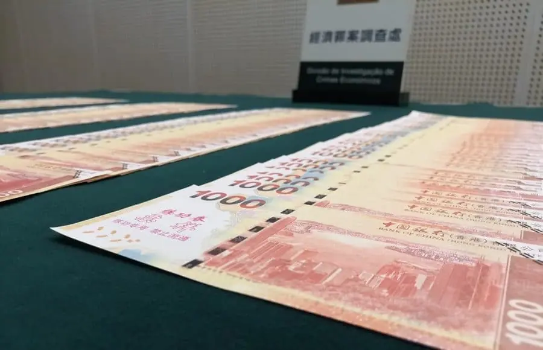
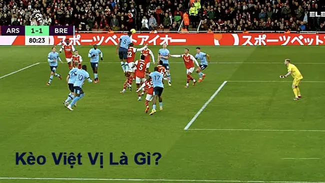
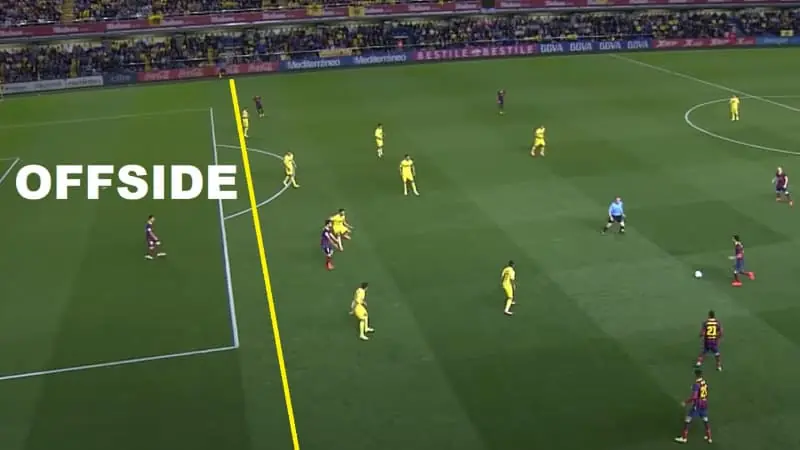
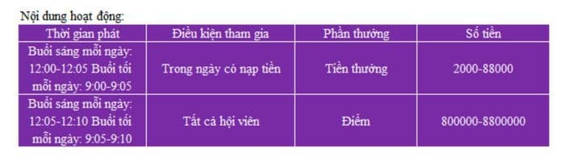
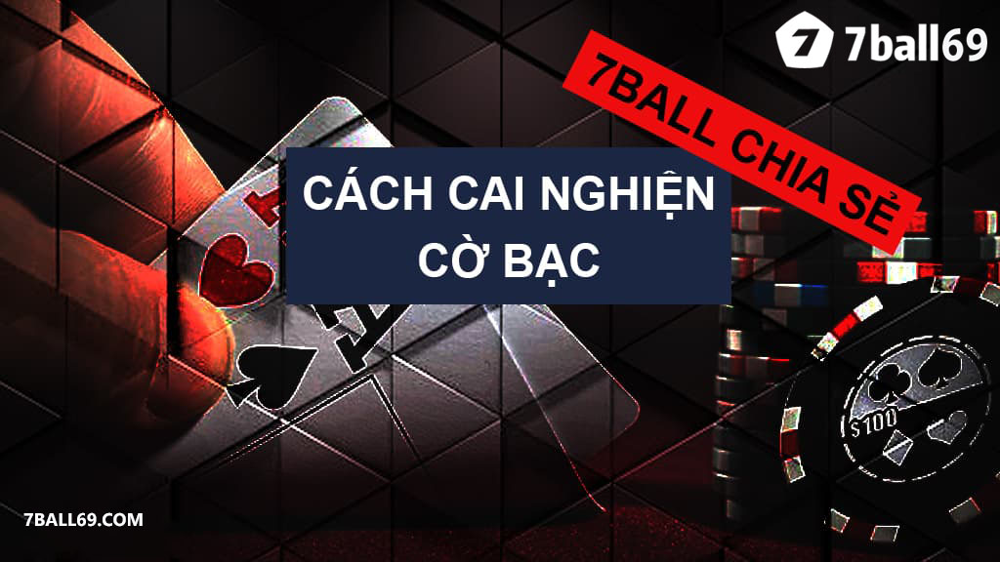
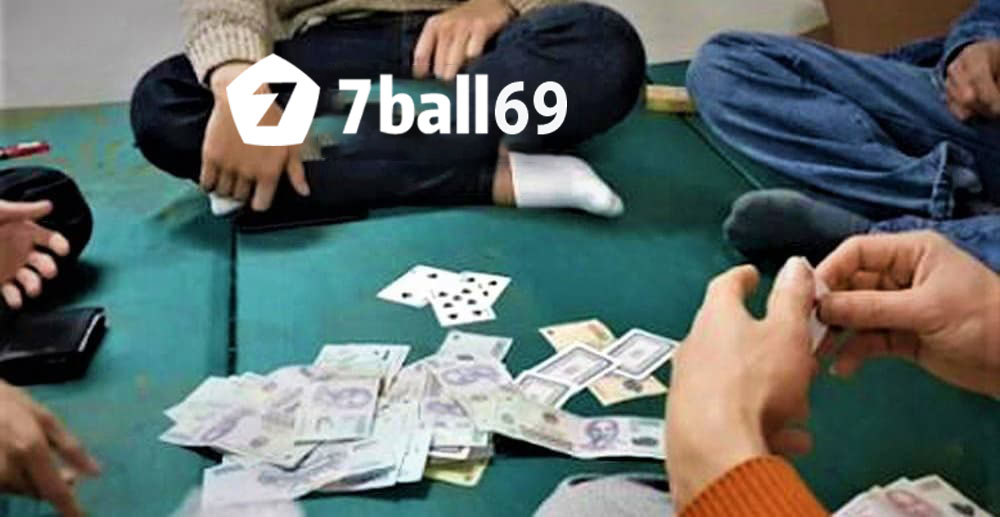
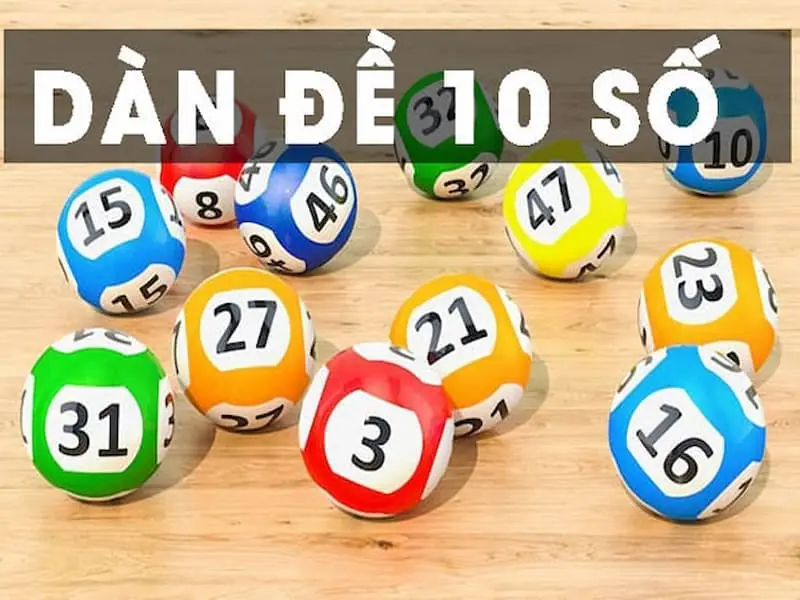

<!DOCTYPE html>
<html>

<head>
    <meta charset="UTF-8" />
    <meta name="viewport" content="width=device-width, initial-scale=1.0" />
    <title>️7Ball69 | 777ball69 - Đăng ký, đăng nhập 7ball69 cc chính thức</title>
    <meta name="description"
        content="7ball69 ✅ Link 7ball69 cc đăng ký - đăng nhập chính thức nhà cái 777ball69 casino game hàng đầu. Tải app cá cược casino, lô đề, bóng đá và nhiều trò chơi khác.">
    <meta name="keywords"
        content="7ball69 Nhà cái cá cược hàng đầu tại Việt Nam :Xổ số,Tài xỉu,Xóc đĩa,Nổ hũ,Thể thao,Bắn cá,Đá gà" />
    <link rel="icon" href="./assets/images/favicon.jpg" />

    <link rel="stylesheet" href="https://cdn.jsdelivr.net/npm/remixicon@4.3.0/fonts/remixicon.min.css">
    <link rel="stylesheet" href="https://cdn.jsdelivr.net/npm/swiper@11/swiper-bundle.min.css" />
    <script src="https://cdn.jsdelivr.net/npm/swiper@11/swiper-bundle.min.js"></script>
    <script src="assets/jquery-3.7.1.min.js"></script>
    <script src="assets/tailwind.js"></script>
    <link rel="stylesheet" href="./assets/index.css" />

</head>

<body class="bg-[#f9f9f9]">
    <div id="showloading" class=" h-screen w-full left-0 bg-[#adadadbe] top-0 fixed duration-1000 z-50">
        <div class=' space-x-2 justify-center flex items-center mt-[20%]'>
            <div class='h-8  w-8 bg-black rounded-full animate-bounce [animation-delay:0s]'></div>
            <div class='h-8 w-8 bg-black rounded-full animate-bounce [animation-delay:-0.3s]'></div>
            <div class='h-8 w-8 bg-black rounded-full animate-bounce'></div>
        </div>
    </div>

    <header id="header"></header>


    <main class="my-20">
        <div class="container max-w-screen-xl mx-auto custom">
            <div class="grid grid-cols-12 md:gap-20">
                <div class="bg-white shadow-sm col-span-12  md:col-span-9 p-5 md:p-20 *:mb-8" id="content_left">


                    <!-- 
                    <h1 class="cursor-pointer"></h1>
                    <p class="text-[#0170B9]"><span class="cursor-pointer hover:text-gray-700">Leave a Comment</span> / <span class="cursor-pointer hover:text-gray-700" id="h3"></span> / <span class="cursor-pointer hover:text-gray-700">by 7ball69 admin</span></p> -->


                </div>
                <div class="col-span-12 md:col-span-3 custom-right" id="content_right"></div>

            </div>
        </div>
    </main>


    <footer id="footer"> </footer>
    <div id="backtotop"></div>


    <script src="./assets/javascript.js"></script>
    <script>
        var active = '';

        const items = [
            {
                id: 1,
                text: `
                                    
                    <h1 class="cursor-pointer">Hơn 2000 người bị cấm vào sòng bạc Macau do đổi tiền bất hợp pháp</h1>
                    <p class="text-[#0170B9]"><span class="cursor-pointer hover:text-gray-700">Leave a Comment</span> / <span class="cursor-pointer hover:text-gray-700">Tin tức 7ball69com</span> / <span class="cursor-pointer hover:text-gray-700">by 7ball69 admin</span></p>
                <p></p>
<p>Năm ngoái, cảnh sát Ma Cao đã xác định hơn 11.000 cá nhân tham gia trao đổi tiền bất hợp pháp và 2.048 cá nhân bị cấm vào sòng bạc Ma Cao.<br/>Theo người đứng đầu cảnh sát Ma Cao, các hoạt động đổi tiền bất hợp pháp được xác định thông qua các cuộc kiểm tra hàng ngày và nhiều hoạt động đặc biệt được tiến hành tại các sòng bạc của thành phố. Sau khi thiết lập cơ chế với cơ quan quản lý sòng bạc của thành phố, Cục Điều phối và Kiểm tra Trò chơi sau đó đã cấm các cá nhân được xác định vào các sòng bạc ở Ma Cao.</p>
<p>Trong cuộc họp báo truyền thông về dữ liệu tội phạm năm 2023, Sit Chong Meng, Giám đốc Cảnh sát Tư pháp, lưu ý rằng các hoạt động kinh doanh trao đổi bất hợp pháp liên quan đến cờ bạc vẫn tiếp tục hoạt động, điều này đang trở thành một rủi ro an ninh nghiêm trọng xung quanh các sòng bạc.</p>
<p>Chính quyền Ma Cao hiện đang xem xét việc hình sự hóa các hoạt động trao đổi tiền trái phép xảy ra tại các sòng bạc ở Ma Cao hoặc khu vực xung quanh.</p>
<p>Cá cược trong sòng bạc Ma Cao yêu cầu đô la Hồng Kông. Tuy nhiên, một phần đáng kể khách hàng đến từ Trung Quốc đại lục, nơi có những hạn chế về số lượng tiền tệ của đất nước, đồng nhân dân tệ, có thể được mang qua biên giới trong mỗi chuyến đi.</p>
<p>Cảnh sát Ma Cao, Tội phạm cờ bạc, Tội phạm sòng bạc, Tội phạm cờ bạc<br/>Tội phạm liên quan đến game thấp so với năm 2019<br/>Cảnh sát Tư pháp cũng đã bắt đầu tổng cộng 2.717 cuộc điều tra tội phạm liên quan đến cờ bạc trong suốt năm 2023, thấp hơn 50% so với năm 2019 trước đại dịch, mặc dù con số này tăng 181% hàng năm.</p>
<p>Sit chỉ ra rằng tội phạm cờ bạc nghiêm trọng đã giảm đáng kể trong năm ngoái, với các vụ cho vay nặng lãi và các vụ giam giữ liên quan giảm lần lượt 80,2% và 90,4% so với năm 2019.</p>
<p>Quan chức này cho biết việc sử dụng cờ bạc cho các hoạt động bất hợp pháp như rửa tiền và các tội phạm nghiêm trọng khác về cơ bản đã biến mất. Trong bối cảnh này, ông tin rằng ngành công nghiệp game Ma Cao đang đi đúng hướng để phát triển lành mạnh.</p>
<p>Các quan chức đã ghi nhận 119 trường hợp cho vay nặng lãi hoặc cho vay nặng lãi có liên quan đến cờ bạc, đánh dấu mức tăng đáng kể 261% so với 33 trường hợp được báo cáo vào năm trước.</p>
<p>Vào năm 2023, cơ quan thực thi pháp luật đã giải quyết 33 trường hợp giam giữ trái pháp luật, một sự gia tăng đáng chú ý so với vụ án đơn độc được ghi nhận vào năm 2022.</p>
<p>Dữ liệu cho thấy tổng cộng 257 trường hợp gian lận liên quan đến trò chơi trong toàn bộ năm 2023, cho thấy mức tăng đáng kể so với cùng kỳ năm ngoái là 199%.</p>
<p><em>7ball69.ocm tổng hợp</em></p>`,
            },
            {
                id: 2,
                text: `
                    <h1 class="cursor-pointer">Doanh thu sòng bạc Jeju Dream Tower đạt 8,8 triệu USD trong tháng 5</h1>
                    <p class="text-[#0170B9]"><span class="cursor-pointer hover:text-gray-700">Leave a Comment</span> / <span class="cursor-pointer hover:text-gray-700" id="h3">Tin tức 7ball69com</span> / <span class="cursor-pointer hover:text-gray-700">by 7ball69 admin</span></p><p>Doanh thu sòng bạc tại khu nghỉ dưỡng Jeju Dream Tower ở Hàn Quốc đã tăng khoảng 14,6% hàng tháng trong tháng 5, đạt tổng cộng 11,41 tỷ won (8,8 triệu USD), theo nhà điều hành khu nghỉ dưỡng Lotte Tour Development Co.<br/>Trong một hồ sơ gửi lên Sở giao dịch chứng khoán Hàn Quốc, Lotte lưu ý rằng con số này cũng tăng 181% hàng năm.</p>
<p>Doanh số bán máy tăng 72% hàng năm nhưng giảm 16% hàng tháng, đạt 733 triệu KRW (560.000 USD), trong khi các trò chơi trên bàn mang về 10,6 tỷ KRW (8,1 triệu USD), tăng 194% hàng năm và khoảng 17% so với tháng trước.</p>
<p>Trong 5 tháng đầu năm, tổng doanh thu tích lũy của sòng bạc đạt 37,73 tỷ KRW (28,84 triệu USD), với các trò chơi trên bàn chiếm phần lớn, ở mức 34,23 tỷ KRW (26,1 triệu USD), tăng 109% hàng năm. Tổng doanh thu trò chơi trên máy đạt 3,5 tỷ KRW, tăng 143% hàng năm.</p>
<p>Doanh số bán khách sạn trong tháng 5 đã giảm gần 30% theo năm nhưng tăng 11% so với tháng trước, đạt 7,68 tỷ KRW (5,87 triệu USD). Trong 5 tháng đầu năm, doanh số bán khách sạn đạt tổng cộng 32,28 tỷ KRW (24,67 triệu USD), giảm khoảng 32,7% so với cùng kỳ năm ngoái. Trong khi Grand Korea Leisure giảm 50% doanh thu hàng tháng chi tiết <a href="https://7ball79.com/grand-korea-leisure-doanh-thu-hang-thang-giam-gan-50-phan-tram/">tại đây</a>.</p>`,
            },
            {
                id: 3,
                text: `
                    <h1 class="cursor-pointer">Grand Korea Leisure chứng kiến ​​doanh thu sòng bạc hàng tháng giảm gần 50%</h1>
                    <p class="text-[#0170B9]"><span class="cursor-pointer hover:text-gray-700">Leave a Comment</span> / <span class="cursor-pointer hover:text-gray-700" id="h3">Tin tức 7ball69com</span> / <span class="cursor-pointer hover:text-gray-700">by 7ball69 admin</span></p><p>Nhà điều hành sòng bạc chỉ dành cho người nước ngoài của Hàn Quốc Grand Korea Leisure đã chứng kiến doanh số bán hàng từ sòng bạc giảm mạnh trong tháng 5, ở mức 25,23 tỷ won (19,46 triệu USD) – giảm khoảng 44,5% so với tháng 4.<br/>Bất chấp sự sụt giảm hàng tháng, con số này vẫn cải thiện 39% so với tháng 5 năm 2022.</p>
<p>Doanh thu trò chơi trên bàn giảm đáng kể đã khiến tổng doanh thu giảm, giảm 48,2% hàng tháng, xuống còn 21,85 tỷ KRW (16,79 triệu USD), vẫn tăng 35,1% hàng năm.</p>
<p>Trong khi đó, doanh thu máy móc tăng cả hàng tháng và hàng năm, 2,4% so với tháng trước và 70,6% so với cùng kỳ năm ngoái, đạt 3,46 tỷ KRW (2,65 triệu USD).</p>
<p>Trong tháng, nhóm này đã giảm 2,9% về số tiền giảm xuống còn 287,56 tỷ KRW (221,02 triệu USD). Tuy nhiên, con số này đã tăng 107,4% hàng năm.</p>
<p>Trong 5 tháng đầu năm, tập đoàn này đã chứng kiến doanh thu sòng bạc hàng năm tăng ba con số – tăng 154% tổng thể, lên 178,48 tỷ KRW (137,17 triệu USD).</p>
<p>Doanh thu trò chơi trên bàn tăng 165,5% hàng năm trong 5 tháng, ở mức 163,26 tỷ KRW (125,47 triệu USD), trong khi doanh thu máy tăng 73,3% hàng năm, lên 15,24 tỷ KRW (11,71 triệu USD).</p>
<p>Mức giảm trong 5 tháng đạt tổng cộng 1,33 nghìn tỷ KRW (1,02 tỷ USD), tăng 151,4% hàng năm.</p>
<blockquote>
<p>Xem thêm: <a href="https://7ball79.com/macau-bat-giu-15-nguoi-buoc-rua-tien/">Macau bắt giữ 15 người bị cáo buộc rửa tiền</a></p>
</blockquote>
<p>– <a href="https://7ball79.com/">7ball69</a> Tổng hợp –</p>`,
            },
            {
                id: 4,
                text: `
                    <h1 class="cursor-pointer">Macau bắt giữ 15 người bị cáo buộc rửa tiền</h1>
                    <p class="text-[#0170B9]"><span class="cursor-pointer hover:text-gray-700">Leave a Comment</span> / <span class="cursor-pointer hover:text-gray-700" id="h3">Tin tức 7ball69com</span> / <span class="cursor-pointer hover:text-gray-700">by 7ball69 admin</span></p><p>Chính quyền Macau bắt giữ 15 người bị cáo buộc rửa tiền/đường dây đánh bạc trực tuyến bất hợp pháp</p>
<p>Liên doanh cá cược thể thao và iGaming Bắc Mỹ giữa Entain và MGM Resorts – BetMGM – đã thông báo rằng họ đã chứng kiến doanh thu ròng vào năm 2022 đạt 1.44 tỷ đô la, tăng 69% so với năm 2021 và dẫn đầu hướng dẫn trước đó là 1.3 tỷ đô la.</p>
<p>Bất chấp sự gia tăng, tập đoàn đã ghi nhận khoản lỗ EBITDA khoảng 440 triệu đô la, nhưng dự kiến EBITDA sẽ dương tính trong nửa cuối năm 2023, vì nó đặt mục tiêu doanh thu ròng từ 1.8 tỷ đô la đến 2 tỷ đô la cho năm 2023.</p>
<p>Liên doanh cá cược thể thao và iGaming Bắc Mỹ giữa Entain và MGM Resorts – BetMGM – đã thông báo rằng họ đã chứng kiến doanh thu ròng vào năm 2022 đạt 1.44 tỷ đô la, tăng 69% so với năm 2021 và dẫn đầu hướng dẫn trước đó là 1.3 tỷ đô la.</p>
<p>Bất chấp sự gia tăng, tập đoàn đã ghi nhận khoản lỗ EBITDA khoảng 440 triệu đô la, nhưng dự kiến EBITDA sẽ dương tính trong nửa cuối năm 2023, vì nó đặt mục tiêu doanh thu ròng từ 1.8 tỷ đô la đến 2 tỷ đô la cho năm 2023.</p>
<p><a href="https://7ball79.com/">7ball69</a> tổng hợp từ agb</p>`,
            },
            {
                id: 5,
                text: `
                    <h1 class="cursor-pointer">Thuật ngữ cá độ bóng đá: Nắm vững kiến thức để chiến thắng</h1>
                    <p class="text-[#0170B9]"><span class="cursor-pointer hover:text-gray-700">Leave a Comment</span> / <span class="cursor-pointer hover:text-gray-700" id="h3">Thể thao</span> / <span class="cursor-pointer hover:text-gray-700">by 7ball69 admin</span></p><p><em>Cá độ bóng đá là một hình thức giải trí phổ biến và hấp dẫn, không chỉ ở Việt Nam mà còn trên toàn thế giới.Việc nắm vững các </em><a href="https://7ball79.com/thuat-ngu-ca-do-bong-da/"><strong><em>thuật ngữ cá độ bóng đá</em></strong></a><em> sẽ giúp bạn hiểu rõ hơn về cách thức hoạt động của thị trường cá cược và tăng cơ hội chiến thắng. Bài viết này sẽ giúp bạn tìm hiểu và nắm vững những thuật ngữ cơ bản trong cá cược bóng đá, từ đó giúp bạn trở thành một người chơi thông thạo , tự tin hơn khi tham gia.</em></p>
<p></p>
<h2><strong>Thuật ngữ cá độ bóng đá thường dùng</strong></h2>
<h3><strong>Các khái niệm cơ bản của cá cược thể thao</strong></h3>
<p>Khi bắt đầu tìm hiểu về cá cược bóng đá tại 7ball69com.app, điều quan trọng đầu tiên là nắm vững các khái niệm cơ bản. Dưới đây là một số <strong>thuật ngữ cá độ bóng đá</strong> quan trọng mà bạn cần biết:</p>
<p>Thuật ngữ cá độ bóng đá</p>
<h4><strong>1. Tỷ lệ cược (Odds)</strong></h4>
<p>Tỷ lệ cược là tỷ lệ mà nhà cái đưa ra để xác định số tiền bạn có thể nhận được nếu đặt cược đúng. Tỷ lệ cược thay đổi theo từng thời điểm và theo từng trận đấu cụ thể.</p>
<h4><strong>2. Kèo châu Á (Asian Handicap)</strong></h4>
<p>Kèo châu Á là một hình thức cá cược phổ biến trong bóng đá, nơi mà nhà cái thiết lập một sự cân đối giữa hai đội bóng bằng cách áp dụng một “handicap” (số điểm giả) cho đội yếu hơn.</p>
<h4><strong>3. Tài xỉu (Over/Under)</strong></h4>
<p>Tài xỉu là loại cược dựa trên tổng số bàn thắng được ghi trong một trận đấu. Người chơi sẽ đặt cược liệu tổng số bàn thắng sẽ lớn hơn hay nhỏ hơn một con số cụ thể do nhà cái đưa ra.</p>
<blockquote>
<p>Xem thêm: <a href="https://7ball79.com/keo-giao-bong-truoc/">Khám phá chi tiết kèo giao bóng trước tại nhà cái</a></p>
</blockquote>
<h3><strong>Những thuật ngữ thông dụng trong cá cược bóng đá</strong></h3>
<p><strong>Thuật ngữ cá độ bóng đá</strong> rất đa dạng, và việc hiểu rõ từng thuật ngữ sẽ giúp bạn tự tin hơn khi tham gia cá cược. Dưới đây là một số thuật ngữ thông dụng mà bạn cần biết:</p>
<p></p>
<h4><strong>Parlay</strong></h4>
<p>Parlay là một loại cược kết hợp, nơi người chơi sẽ đặt cược vào nhiều trận đấu cùng một lúc. Để thắng cược, tất cả các dự đoán đều phải chính xác.</p>
<h4><strong>Banker</strong></h4>
<p>Banker là <strong>thuật ngữ cá độ bóng đá</strong> dùng để chỉ một trận đấu mà người chơi tin chắc sẽ thắng. Trận đấu này thường được chọn để kết hợp với các trận đấu khác trong cược Parlay.</p>
<h4><strong>Stake</strong></h4>
<p>Stake là số tiền mà người chơi đặt cược vào mỗi trận đấu. Việc quản lý stake cẩn thận là một yếu tố quan trọng trong việc thành công khi cá cược bóng đá.</p>
<h4><strong>Betting Line</strong></h4>
<p>Đường cược là các tỷ lệ cược mà nhà cái đưa ra cho từng trận đấu. Đường cược thường thay đổi theo từng thời điểm và phản ánh sự thay đổi của ý kiến của người chơi.</p>
<h4><strong>Hệ thống cá cược (Betting System)</strong></h4>
<p>Hệ thống cá cược là cách thức người chơi quản lý và đặt cược vào các trận đấu. Có nhiều hệ thống cá cược khác nhau như Martingale, Fibonacci, Labouchere, và mỗi hệ thống đều có những ưu điểm và hạn chế riêng.</p>
<h3><strong>Tiền đặt cược và tiền thanh toán trong cá cược bóng đá</strong></h3>
<p>Khi tham gia cá cược bóng đá, việc quản lý tiền đặt cược và tiền thanh toán là một phần quan trọng giúp bạn duy trì sự ổn định tài chính và tối ưu hóa lợi nhuận.</p>
<blockquote>
<p>Xem thêm: <a href="https://7ball79.com/dan-de-10-so-bat-tu/">Dàn Đề 10 Số Bất Tử: Phương Pháp và Kinh Nghiệm Chơi</a></p>
</blockquote>
<h2><strong>Những mẹo để hiểu các thuật ngữ cá cược bóng đá</strong></h2>
<p>Khi tìm hiểu về các <strong>thuật ngữ cá độ bóng đá</strong>, có một số yếu tố quan trọng mà bạn cần lưu ý để hiểu rõ hơn về cách thức hoạt động của thị trường cá cược.</p>
<p>Hiểu rõ về đội bóng, phong độ thi đấu, lực lượng cầu thủ, và thông tin về huấn luyện viên sẽ giúp bạn đưa ra dự đoán chính xác hơn về kết quả của trận đấu.</p>
<p>Theo dõi và phân tích sự thay đổi của tỷ lệ cược từ nhà cái sẽ giúp bạn hiểu rõ hơn về ý kiến của người chơi và dự đoán được xu hướng của thị trường.</p>
<p>Nắm vững về các hệ thống cá cược và hiểu rõ về cách thức hoạt động của từng hệ thống sẽ giúp bạn tối ưu hóa cơ hội chiến thắng và quản lý rủi ro hiệu quả.</p>
<p>Thuật ngữ cá độ bóng đá</p>
<h3><strong>Những lưu ý trong khi sử dụng các thuật ngữ cá cược bóng đá</strong></h3>
<p></p>
<p>Khi sử dụng các <strong>thuật ngữ cá độ bóng đá</strong>, việc lưu ý và áp dụng chúng vào thực tế là một yếu tố quan trọng để tối ưu hóa cơ hội chiến thắng.</p>
<p>Việc tìm hiểu kỹ về từng <strong>thuật ngữ cá độ bóng đá</strong> và hiểu rõ về ý nghĩa cũng như cách áp dụng chúng vào việc đặt cược sẽ giúp bạn tự tin hơn khi tham gia cá cược.</p>
<p>Sau khi nắm vững các thuật ngữ, việc thực hành và kiểm chứng chúng qua việc đặt cược trong thực tế sẽ giúp bạn hiểu rõ hơn về cách thức hoạt động và tối ưu hóa kỹ năng cá cược.</p>
<p>Tiếp đến, theo dõi và cập nhật thông tin về bóng đá, tỷ lệ cược, các yếu tố khác liên quan sẽ giúp bạn đưa ra dự đoán chính xác hơn tối ưu hóa cơ hội chiến thắng.</p>
<h2><strong>Kết luận</strong></h2>
<p><em>Trên đây là một số </em><strong><em>thuật ngữ cá độ bóng đá</em></strong><em> cơ bản và mẹo quan trọng giúp bạn nắm vững kiến thức , tăng cơ hội chiến thắng khi tham gia cá cược bóng đá. Việc hiểu rõ về các thuật ngữ và áp dụng chúng vào thực tế sẽ giúp bạn trở thành một người chơi thông thạo , tự tin hơn khi tham gia cá cược bóng đá. Chúc bạn may mắn và thành công trên con đường cá cược tại <a href="https://7ball79.com/">7ball69.ocm</a></em></p>`,
            },
            {
                id: 6,
                text: `
                    <h1 class="cursor-pointer">Nuôi lô bạch thủ khung 3 ngày</h1>
                    <p class="text-[#0170B9]"><span class="cursor-pointer hover:text-gray-700">Leave a Comment</span> / <span class="cursor-pointer hover:text-gray-700" id="h3"> Xổ số </span> / <span class="cursor-pointer hover:text-gray-700">by 7ball69 admin</span></p><h2>Nuôi lô bạch thủ khung 3 ngày – Bí quyết thành công cho dân chơi lô đề chuyên nghiệp</h2>
<p><em>Lô bạch thủ là một trong những con số được nhiều người chơi lô đề săn đón bởi tính chính xác và hiệu quả của nó. Tuy nhiên, để nuôi lô bạch thủ khung 3 ngày chuẩn xác và bất bại không phải là điều dễ dàng. Để giúp các bạn có thể nuôi lô bạch thủ khung 3 ngày hiệu quả và dễ trúng. Trong bài viết này, chúng tôi sẽ chia sẻ với các bạn những kỹ thuật, công thức, cách nuôi lô bạch thủ khung 3 ngày và những lưu ý quan trọng khi chơi lô bạch thủ. Cùng <a href="https://7ball79.com/">7ball69.ocm</a></em> <em> tìm hiểu áp dụng để trở thành một cao thủ <a href="https://7ball79.com/huong-dan-7ball/xo-so/">lô đề</a> chuyên nghiệp nhé!</em></p>
<p></p>
<h2><strong>Kỹ thuật nuôi lô bạch thủ khung 3 ngày bất bại</strong></h2>
<p>Để nuôi lô bạch thủ khung 3 ngày bất bại, bạn cần phải có những kỹ thuật chơi lô đề tốt và hiểu rõ về cách hoạt động của con số lô bạch thủ. Dưới đây là những kỹ thuật cơ bản mà bạn nên nắm vững khi chơi lô bạch thủ.</p>
<p>Nuôi bạch thủ lô khung 3 ngày</p>
<h3><strong>Kỹ thuật 1: Tìm hiểu về lô bạch thủ</strong></h3>
<p>Lô bạch thủ là một trong những con số được tính toán và dự đoán từ các con số khác trong bảng lô đề. Nó có tính chất “đặc biệt” và thường xuất hiện trong các kết quả xổ số. Để nuôi lô bạch thủ khung 3 ngày, bạn cần phải tìm hiểu về tính chất và cách hoạt động của nó. Bạn có thể tham khảo các trang web chuyên về lô đề hoặc học hỏi từ những người chơi lô đề có kinh nghiệm để hiểu rõ hơn về lô bạch thủ.</p>
<h3><strong>Kỹ thuật 2: Sử dụng phương pháp phân tích thống kê</strong></h3>
<p>Phương pháp phân tích thống kê là một trong những kỹ thuật quan trọng giúp bạn có thể nuôi lô bạch thủ khung 3 ngày bất bại. Bằng cách sử dụng các công cụ và phần mềm phân tích thống kê, bạn có thể dễ dàng xác định được các con số có khả năng xuất hiện trong lô bạch thủ và tạo ra những bộ số đẹp và chính xác.</p>
<h2><strong>Công thức nuôi lô bạch thủ khung 3 ngày hiệu quả nhất</strong></h2>
<p>Để nuôi lô bạch thủ khung 3 ngày hiệu quả nhất, bạn cần phải áp dụng những công thức chơi lô đề thông minh và có tính toán. Dưới đây là một số công thức nuôi lô bạch thủ khung 3 ngày mà bạn có thể tham khảo.</p>
<p></p>
<h3><strong>Công thức 1: Sử dụng hệ thống cầu lô</strong></h3>
<p>Hệ thống cầu lô là một trong những công thức nuôi lô bạch thủ khung 3 ngày hiệu quả nhất. Bằng cách sử dụng các cầu lô đã được tính toán và phân tích trước đó, bạn có thể tạo ra những bộ số lô bạch thủ đẹp và có khả năng trúng cao.</p>
<blockquote>
<p>Xem thêm: <a href="https://7ball79.com/cach-choi-xo-so-7ball-cach-kiem-tien-nhanh-nhat-2022/">Cách chơi xổ số 7ball69 – Cách kiếm tiền nhanh nhất 2022</a></p>
</blockquote>
<h3><strong>Công thức 2: Áp dụng phương pháp tổng hợp</strong></h3>
<p>Phương pháp tổng hợp là một trong những công thức nuôi lô bạch thủ khung 3 ngày được nhiều người chơi lô đề ưa chuộng. Bằng cách tổng hợp các con số có khả năng xuất hiện trong lô bạch thủ từ các con số khác trong bảng lô đề, bạn có thể tạo ra những bộ số đẹp và chính xác.</p>
<h2><strong>Hướng dẫn chi tiết cách nuôi lô bạch thủ khung 3 ngày dễ trúng</strong></h2>
<p>Để nuôi lô bạch thủ khung 3 ngày dễ trúng, bạn cần phải áp dụng đúng các kỹ thuật và công thức đã được đề cập ở trên. Ngoài ra, dưới đây là một số hướng dẫn chi tiết mà bạn có thể tham khảo để tăng cơ hội trúng lô bạch thủ.</p>
<p>Nuôi bạch thủ lô khung 3 ngày</p>
<h3><strong>Hướng dẫn 1: Chọn bộ số lô bạch thủ đẹp</strong></h3>
<p>Việc chọn bộ số lô bạch thủ đẹp là rất quan trọng khi nuôi lô bạch thủ khung 3 ngày. Bạn nên áp dụng các công thức và kỹ thuật đã được đề cập ở trên để tạo ra những bộ số đẹp và có khả năng trúng cao.</p>
<h3><strong>Hướng dẫn 2: Theo dõi và phân tích kết quả xổ số</strong></h3>
<p>Theo dõi và phân tích kết quả xổ số là một trong những việc cần thiết khi nuôi lô bạch thủ khung 3 ngày. Bằng cách theo dõi các kết quả xổ số trước đó, bạn có thể dễ dàng xác định được xu hướng và tính chất của lô bạch thủ và tạo ra những bộ số chính xác hơn.</p>
<h3><strong>Hướng dẫn 3: Chơi với số tiền nhỏ và kiên nhẫn</strong></h3>
<p>Việc chơi lô bạch thủ khung 3 ngày không chỉ đòi hỏi sự thông minh và tính toán mà còn cần sự kiên nhẫn. Bạn nên chơi với số tiền nhỏ và kiên nhẫn để có thể nuôi lô bạch thủ thành công và tránh rủi ro.</p>
<h2><strong>Những lưu ý quan trọng khi nuôi lô bạch thủ khung 3 ngày</strong></h2>
<p></p>
<p>Để có thể nuôi lô bạch thủ khung 3 ngày thành công, bạn cần phải lưu ý những điều sau đây:</p>
<ul>
<li>Không nên chơi quá nhiều số trong một lần.</li>
<li>Nên áp dụng các kỹ thuật và công thức đã được đề cập ở trên.</li>
<li>Theo dõi và phân tích kết quả xổ số để có thể tạo ra những bộ số chính xác hơn.</li>
<li>Chơi với số tiền nhỏ và kiên nhẫn.</li>
<li>Không nên chơi lô bạch thủ khi bạn đang trong tình trạng căng thẳng hoặc không tập trung.</li>
</ul>
<h2><strong>Kinh nghiệm nuôi lô bạch thủ khung 3 ngày từ các chuyên gia</strong></h2>
<p>Để có thể nuôi lô bạch thủ khung 3 ngày thành công, bạn cần phải học hỏi và tham khảo kinh nghiệm từ các chuyên gia. Dưới đây là một số kinh nghiệm nuôi lô bạch thủ khung 3 ngày từ các chuyên gia mà bạn có thể áp dụng:</p>
<ul>
<li>Tìm hiểu và nắm rõ về tính chất và cách hoạt động của lô bạch thủ.</li>
<li>Sử dụng các công cụ và phần mềm phân tích thống kê để tạo ra những bộ số chính xác hơn.</li>
<li>Theo dõi và phân tích kết quả xổ số để có thể dự đoán được xu hướng và tính chất của lô bạch thủ.</li>
<li>Chơi với số tiền nhỏ và kiên nhẫn để tránh rủi ro và tăng cơ hội trúng lô bạch thủ.</li>
</ul>
<blockquote>
<p>Xem thêm: <a href="https://7ball79.com/mo-thay-ran/">Mơ thấy rắn đánh số gì ? | Ý nghĩa của mơ thấy rắn</a></p>
</blockquote>
<h2><strong>Kết luận</strong></h2>
<p><em>Như vậy, qua bài viết này của 7ball69 </em><em>đã chia sẻ với các bạn những kỹ thuật, công thức, cách nuôi lô bạch thủ khung 3 ngày hiệu quả và những lưu ý quan trọng khi chơi lô bạch thủ. Hy vọng rằng những thông tin này sẽ giúp các bạn có thể nuôi lô bạch thủ khung 3 ngày chuẩn xác và dễ trúng hơn. Chúc các bạn thành công và may mắn trong việc nuôi lô bạch thủ!</em></p>`,
            },
            {
                id: 7,
                text: `
                    <h1 class="cursor-pointer">Tổng hợp các loại kèo việt vị mà bạn cần biết</h1>
                    <p class="text-[#0170B9]"><span class="cursor-pointer hover:text-gray-700">Leave a Comment</span> / <span class="cursor-pointer hover:text-gray-700" id="h3">Thể thao</span> / <span class="cursor-pointer hover:text-gray-700">by 7ball69 admin</span></p><p><strong><em>Kèo việt vị </em></strong><em>là một trong những loại kèo cược phổ biến và được nhiều người chơi bóng đá yêu thích. Đây là một kèo cược dựa trên dự đoán số lỗi việt vị của cả hai đội trong thời gian thi đấu chính thức của một trận đấu.Trong bài viết này, <a href="https://7ball79.com/">7ball69</a> và bạn sẽ cùng tìm hiểu về tổng hợp các loại kèo cược việt vị và cách thức áp dụng chúng.</em></p>
<h2><strong>Tìm hiểu các loại kèo việt vị : </strong></h2>
<p>Dưới đây là một số loại <strong>kèo việt vị</strong> phổ biến mà người chơi thường xuyên sử dụng khi tham gia cược bóng đá trực tuyến:</p>
<p></p>
<p>Kèo việt vị</p>
<h3><strong>Kèo chấp việt vị</strong></h3>
<p>Kèo chấp việt vị là một trong những loại kèo cược phổ biến nhất trong các trận đấu bóng đá. Đây là loại kèo cược mà nhà cái đưa ra tỷ lệ chấp cho đội mạnh chấp đội yếu. Ví dụ, trong một trận đấu giữa Manchester United và Brighton, nhà cái có thể đưa ra kèo chấp việt vị là 1/2:0 cho Manchester United. Điều này có nghĩa là nếu bạn đặt cược vào Manchester United, đội bóng này phải thắng với cách biệt ít nhất là 2 bàn để bạn có thể chiến thắng. Nếu Manchester United chỉ thắng với cách biệt 1 bàn, kèo cược sẽ được coi là hòa và bạn sẽ không thắng được tiền.</p>
<p>Tuy nhiên, nếu bạn đặt cược vào Brighton và đội bóng này thua với cách biệt ít hơn hoặc hòa, bạn sẽ thắng kèo cược. Kèo chấp việt vị thường được áp dụng trong các trận đấu giữa đội bóng mạnh và đội bóng yếu. Khiến cho trận đấu trở nên hấp dẫn hơn cơ hội chiến thắng của người chơi cũng cao hơn.</p>
<blockquote>
<p>Xem thêm: <a href="https://7ball79.com/gioi-thieu-game-cf68/">Game CF68 – Cá cược mê say với kho game cực hay</a></p>
</blockquote>
<h3><strong>Kèo tài xỉu việt vị</strong></h3>
<p>Kèo tài xỉu việt vị là một trong những loại kèo cược khá phổ biến và được nhiều người chơi yêu thích. Đây là loại kèo cược dựa trên tổng số lần mắc lỗi việt vị của cả hai đội trong thời gian thi đấu chính thức của một trận đấu. Trong kèo tài xỉu việt vị, nhà cái sẽ đưa ra một tỷ lệ cược cho số lần việt vị trong trận đấu .Người chơi sẽ phải dự đoán liệu tổng số lần việt vị có nhiều hơn hay ít hơn tỷ lệ này.</p>
<h3><strong>Kèo việt vị chẵn lẻ</strong></h3>
<p>Kèo việt vị chẵn lẻ là một trong những loại kèo cược đơn giản nhất trong các loại <strong>kèo việt vị</strong>. Đây là loại kèo cược dựa trên tổng số lần việt vị trong trận đấu, và người chơi sẽ phải dự đoán liệu tổng số lần việt vị có là số chẵn hay lẻ.</p>
<p>Ví dụ, trong một trận đấu giữa Arsenal và Tottenham, nhà cái có thể đưa ra <strong>kèo việt vị </strong>chẵn lẻ là 8. Nếu bạn đặt cược vào “chẵn”, tổng số lần việt vị trong trận đấu sẽ là một số chẵn, nếu tổng số lần việt vị là 8 hoặc 10, bạn sẽ thắng kèo cược. Ngược lại, nếu bạn đặt cược vào “lẻ”, tổng số lần việt vị trong trận đấu sẽ là một số lẻ, nếu tổng số lần việt vị là 7 hoặc 9, bạn sẽ thắng kèo cược.</p>
<p></p>
<p>Kèo việt vị</p>
<p> </p>
<h3><strong>Kèo cược việt vị cho đội đầu tiên và cuối cùng</strong></h3>
<p>Kèo cược việt vị cho đội đầu tiên và cuối cùng là một trong những loại kèo cược khá mới mẻ , được nhiều người chơi quan tâm. Đây là loại kèo cược dựa trên số lần việt vị của đội bóng đầu tiên và cuối cùng trong trận đấu. Người chơi sẽ phải dự đoán liệu đội bóng đầu tiên ,cuối cùng có mắc lỗi việt vị hay không.</p>
<p>Ví dụ, trong một trận đấu giữa Real Madrid và Barcelona, nhà cái có thể đưa ra kèo cược việt vị cho đội đầu tiên và cuối cùng là “có” hoặc “không”. Nếu bạn đặt cược vào “có”, tức là đội bóng đầu tiên và cuối cùng đều mắc lỗi việt vị, nếu cả hai đội đều mắc lỗi việt vị, bạn sẽ thắng kèo cược. Ngược lại, nếu bạn đặt cược vào “không”, tức là ít nhất một trong hai đội không mắc lỗi việt vị, và nếu chỉ có một trong hai đội mắc lỗi việt vị, bạn sẽ thắng kèo cược.</p>
<h2><strong>Bí quyết chơi kèo việt vị hiệu quả</strong></h2>
<p>Để có thể chiến thắng trong các trận đấu, không chỉ cần hiểu rõ về các loại <strong>kèo việt vị </strong>mà còn cần áp dụng các bí quyết chơi kèo việt vị hiệu quả. Dưới đây là một số bí quyết giúp bạn có thể chiến thắng trong các trận đấu và tăng cơ hội chiến thắng.</p>
<p></p>
<p> </p>
<h2><strong>Thực hiện soi kèo việt vị trong mỗi trận đấu</strong></h2>
<p>Một trong những bí quyết quan trọng nhất để chiến thắng trong các trận đấu là thực hiện soi <strong>kèo việt vị</strong> trong mỗi trận đấu. Điều này giúp bạn có thể nắm bắt được thông tin về tỷ lệ việt vị, phong độ của các đội bóng và đưa ra dự đoán chính xác hơn.</p>
<p>Có rất nhiều trang web cung cấp thông tin về <strong>kèo việt vị</strong>, bạn có thể tham khảo và so sánh để đưa ra dự đoán chính xác hơn.</p>
<h2><strong>Xem biểu đồ thống kê việt vị của 2 đội</strong></h2>
<h2>Việc xem biểu đồ thống <strong>kê việt vị </strong>của 2 đội trước khi đặt cược cũng là một trong những bí quyết giúp bạn chiến thắng trong các trận đấu. Việc này giúp bạn có thể nắm bắt được phong độ và tính chất của hai đội bóng, từ đó đưa ra dự đoán chính xác hơn.</h2>
<h2><strong>Theo dõi phong cách chơi và tinh thần đồng đội giữa các hậu vệ</strong></h2>
<p>Một yếu tố quan trọng trong việc đưa ra dự đoán chính xác về <strong>kèo việt vị </strong>là theo dõi phong cách chơi và tinh thần đồng đội giữa các hậu vệ. Nếu một đội bóng có sự phối hợp tốt giữa các hậu vệ và ít mắc lỗi việt vị, tỷ lệ việt vị sẽ thấp hơn người chơi có thể đưa ra dự đoán chính xác hơn.</p>
<blockquote>
<p>Xem thêm: <a href="https://7ball79.com/7ball-tang-131k/">Khuyến mãi 7ball69 tặng 131k</a></p>
</blockquote>
<h2><strong>Kết luận</strong></h2>
<p><strong><em>Kèo việt vị</em></strong><em> là một trong những loại kèo cược phổ biến và hấp dẫn trong giới cá độ bóng đá. Với tính cạnh tranh và khả thi cao, người chơi có thể tăng cơ hội chiến thắng khi áp dụng các bí quyết chơi kèo việt vị hiệu quả. Hãy áp dụng những bí quyết này để trở thành một người chơi chuyên nghiệp, <a href="https://7ball79.com/">7ball69.ocm</a> chúc bạn đạt được nhiều thành công trong các trận đấu.</em></p>`,
            },
            {
                id: 8,
                text: `
                    <h1 class="cursor-pointer">Giới thiệu bắn cá Vua hải tặc | Bắn cá 4D</h1>
                    <p class="text-[#0170B9]"><span class="cursor-pointer hover:text-gray-700">Leave a Comment</span> / <span class="cursor-pointer hover:text-gray-700" id="h3">Thể thao</span> / <span class="cursor-pointer hover:text-gray-700">by 7ball69 admin</span></p><p>Trong số các game <a href="https://7ball79.com/huong-dan-7ball/ban-ca/">bắn cá tại 7ball69</a> trực tuyến hiện nay, Vua hải tặc là tựa game bắn cá được ưa thích hàng đầu hiện nay.  Game có giao diện đơn giản, hình ảnh sắc nét, âm thanh chân thực, nạp rút tiền dễ dàng, nhanh chóng. Ở bài viết này, chúng ta sẽ tìm hiểu chi tiết hơn về game bắn cá Vua hải tặc, liệu nó có gì đặc biệt hơn so với những game bắn cá khác trên thị trường hiện nay.</p>
<h2>Game bắn cá Vua hải tặc là gì?</h2>
<p>Vua hải tặc là tựa game bắn cá đổi thưởng trực tuyến có giao diện được thiết kế hiện đại, đẹp mắt, mô tả nhiều khung cảnh đại dương đặc sắc.  Vua hải tặc mang đến cho người chơi nhiều trải nghiệm mới lạ, kịch tính. Hệ thống kho đạn siêu khủng với nhiều chủng loại có sức công phá lớn như đạn chùm, đạn laze, đạn cối. Cho người chơi thoải mái lựa chọn và tăng tỷ lệ sát thương, tăng vàng kiếm được.</p>
<p>Các loại súng được sử dụng trong game gồm có: súng 3 nòng, tên lửa và nhiều loại khác có sức công phá lớn. Bên cạnh đó, nhiều tính năng khác cũng được nhà sản xuất tạo ra để hỗ trợ người chơi tối đa như: đóng băng mục tiêu, khóa chết cá.</p>
<h2>Hướng dẫn chơi game bắn cá Vua hải tặc</h2>
<p>Vua hải tặc là tựa game bắn cá có cách chơi đơn giản. Sau khi tạo tài khoản và đăng nhập thành công vào Vua hải tặc, bạn đăng nhập và nạp tiền vào tài khoản của mình. Hoặc bạn cũng có thể nhận vàng thưởng cho lần đăng nhập đầu tiên của mình. Người chơi sẽ sử dụng  số vàng này để mua đạn để bắn cá.</p>
<p></p>
<p>Khi người chơi bắn chết cá, tiền thưởng tương ứng sẽ tăng lên, cá càng lớn tiền thưởng càng nhiều. Tiền thưởng sẽ hiển thị ở góc trái màn hình nằm ngay bên cạnh súng.</p>
<p>Để chơi tốt game <a href="https://7ball79.com/ban-ca-vua-hai-tac/">bắn cá Vua hải tặc</a>, bạn phải luyện tập thường xuyên để nâng cao khả năng chơi của mình. Ngoài ra, bạn cũng nên tìm hiểu thuộc tính, điểm số của mỗi loài cá để có được chiến thuật chơi hợp lý, ít tốn đạn nhất nhưng vẫn săn được cá lớn.</p>
<blockquote>
<p>Xem thêm: <a href="https://7ball79.com/ban-ca-la-gi-tim-hieu-ve-ban-ca-7ball/">Bắn cá là gì? Tìm hiểu về bắn cá 7ball69</a></p>
</blockquote>
<h2>Vì sao nên chơi game Vua hải tặc</h2>
<p>So với các tựa game bắn cá khác trên thị trường hiện nay, Vua hải tặc được cho là có nhiều điểm vượt trội hơn nhờ game sở hữu nhiều tính năng hấp dẫn người chơi:</p>
<ul>
<li>Có nhiều phòng chơi thiết kế phù hợp cho cả người mới lẫn những tay săn cá có kinh nghiệm. Vua hải tặc thường có nhiều mini game hấp dẫn cho người chơi tham gia.</li>
<li>Vua hải tặc tạo ra rất nhiều loại cá, boss cá cho người chơi tha hồ săn bắn. Số lượng boss cực lớn, lên đến hơn 90 boss, hơn 60 loài cá và 30 bản đồ kho báu đa dạng khác nhau.</li>
<li>Hệ thống vũ khí của game tương đương hơn 1000 cấp pháo có mức độ sát thương khác nhau đối với từng sinh vật biển. Hầu hết các game bắn cá khác đều chưa thể làm được điều này.</li>
<li>Các bước tạo tài khoản hay tải game rất đơn giản và nhanh chóng. Dung lượng tải game tương đối nhẹ, ít dung lượng. Game tương thích và chạy được trên hầu hết các dòng máy điện thoại, laptop, máy tính bảng, PC…</li>
<li>Game miễn phí, bạn không cần trả tiền để tải được game. Trừ khi bạn muốn đầu tư thêm vàng để tăng khả năng săn được nhiều cá hơn.</li>
<li>Game Vua hải tặc đã xây dựng được một cộng đồng game lớn, đa dạng người chơi, bạn có thể tham gia các hội nhóm bắn cá Vua hải tặc để học hỏi, trao đổi kinh nghiệm.</li>
<li>Vua hải tặc thường tổ chức rất nhiều sự kiện trong game, phần thưởng cho mỗi sự kiện thường rất lớn.</li>
<li>Vua hải tặc cho phép người dùng nạp tiền cũng như đổi tiền ra thẻ cào cực đơn giản với chỉ vài thao tác. Hệ thống cũng không yêu cầu người chơi xác minh hay chờ xét duyệt phức tạp như với các game khác. 3 nhà mạng lớn ở Việt Nam được hỗ trợ trong game là Viettel, Mobi và Vina. Giao dịch không hề giới hạn mệnh giá cũng như số lần giao dịch.</li>
<li>Nếu số lượng giao dịch lớn lên đến tiền triệu, bạn có thể chọn hình thức giao dịch qua Momo.</li>
<li>Các giao dịch được xác nhận thông qua mã OTP có mức độ bảo mật cao, những giao dịch này cũng sẽ được hệ thống lưu lại phòng trường xảy ra sự cố khi giao dịch.</li>
</ul>
<blockquote>
<p>Xem thêm: <a href="https://7ball79.com/mot-so-meo-choi-game-ban-ca-online-ty-le-thang-cao/">Một số mẹo chơi game bắn cá online tỷ lệ thắng cao</a></p>
</blockquote>
<p></p>
<h2>Kinh nghiệm chơi game bắn cá Vua hải tặc luôn thắng</h2>
<p>Muốn nâng cao tỷ lệ chiến thắng khi chơi game Vua hải tặc, bạn cần lưu ý một vài điểm dưới đây:</p>
<ul>
<li>Chỉ nên sử dụng tiền để trang bị những loại súng, đạn có sức sát thương lớn. Không nên sử dụng loại súng kém sức mạnh hơn, hiệu quả sẽ không cao.</li>
<li>Chọn bắn cá phù hợp với sức đạn của mình, cá càng to thì lựa đạn có sức công phá lớn, phải bình tĩnh ngắm bắn thật chuẩn thay vì xả đạn liên tục nhưng kém chính xác.</li>
<li>Khi vốn còn ít, nên tập trung vào săn cá nhỏ.</li>
<li>Bắn cá mới xuất hiện trên bàn chơi, tỷ lệ tiêu diệt được cá sẽ cao hơn.</li>
<li>Không nên sử dụng chế độ bắn tự động, điều này sẽ không mang lại kết quả tốt cho bạn.</li>
</ul>
<h2>Lời kết</h2>
<p><a href="https://7ball79.com/">7ball69 Việt Nam</a> vừa chia sẻ với bạn đọc thông tin chi tiết về game bắn cá Vua hải tặc. Đây là trò chơi hấp dẫn, thu hút được rất nhiều người tham gia. Nếu bạn đang tìm kiếm một tựa game vừa giải trí, vừa có thể kiếm được tiền thì Vua hải tặc là cái tên mà bạn không thể bỏ qua.</p>`,
            },
            {
                id: 9,
                text: `
                    <h1 class="cursor-pointer">MỪNG NOEL VÀ TẾT DƯƠNG LỊCH, MƯA LÌ XÌ</h1>
                    <p class="text-[#0170B9]"><span class="cursor-pointer hover:text-gray-700">Leave a Comment</span> / <span class="cursor-pointer hover:text-gray-700" id="h3">Khuyến mãi</span> / <span class="cursor-pointer hover:text-gray-700">by 7ball69 admin</span></p><p><strong>Thời gian hoạt động: 24 tháng 12 – 02 tháng 01<br/>Điều kiện tham gia: Toàn bộ hội viên đã xác thực số điện thoại và thẻ ngân hàng đều có thể tham gia</strong></p>
<p></p>
<p> </p>
<p><strong>Quy tắc hoạt động:<br/>1. Tất cả tiền thưởng được hệ thống tự động phát;<br/>2. Tất cả điểm thưởng, tiền thưởng hoàn thành 1 vòng cược là có thể rút tiền;<br/>3. Hoạt động này tuân theo các quy tắc và điều khoản chung của 7ball69. Nếu phát hiện bất kỳ vi phạm nào, chúng tôi sẽ có quyền xem xét tiền quà tặng và lợi nhuận được tạo ra vô thời hạn<br/>4. Quyền giải thích và quyết định cuối cùng thuộc về <a href="https://7ball79.com/">7ball69</a></strong></p>
<p>Theo thông tin từ <a href="https://www.777balls.com/promotions">trung tâm khuyến mãi 7ball69</a></p>`,
            },
            {
                id: 10,
                text: `
                    <h1 class="cursor-pointer">Khuyến mãi 7ball69 tặng 131k</h1>
                    <p class="text-[#0170B9]"><span class="cursor-pointer hover:text-gray-700">Leave a Comment</span> / <span class="cursor-pointer hover:text-gray-700" id="h3">Khuyến mãi</span> / <span class="cursor-pointer hover:text-gray-700">by 7ball69 admin</span></p><p>Web cược <a href="https://7ball79.com/">7ball69 game</a> là một địa chỉ cá cược ăn thưởng online có uy tín được nhiều cược thủ tin tưởng lựa chọn. Bên cạnh thông tin minh bạch, web cược này cũng mang đến những chương trình khuyến mãi cho những tân cược thủ. Một trong những chương trình <a href="https://7ball79.com/khuyen-mai/">khuyến mãi</a> được quan tâm nhất là <strong>7ball69 tặng 131k</strong> khi đăng ký cho một tân thủ. Hôm nay chúng tôi sẽ hướng dẫn cho anh em cách tham gia chương trình khuyến mãi <strong>7ball69 tặng 131k</strong> này nhé.</p>
<p> </p>
<h2><strong>Một số lưu ý khi tham gia 7ball69 tặng 131k</strong></h2>
<p>Dưới đây là một số ghi chú mà cược thủ cần biết trước khi đăng ký chương trình khuyến mãi để nhận 131k tại nhà cái cá cược 7ball69:</p>
<p><em>Một trong những chương trình quan tâm nhất là tặng 131k khi đăng ký cho một tân thủ</em></p>
<ol>
<li>Mỗi cược thủ chỉ có thể tham gia vào chương trình khuyến mãi <strong>7ball69 tặng 131k</strong> một lần duy nhất.</li>
<li>Cược thủ không được phép thay đổi thông tin tài khoản cá cược cũng như tài khoản ngân hàng trong quá trình tham gia khuyến mãi này.</li>
<li>Nếu một cược thủ bị hệ thống 7ball69 tìm thấy để có dấu hiệu gian lận, lợi dụng, không minh bạch,… trong quá trình tham gia khuyến mãi <strong>7ball69 tặng 131k</strong>, 7ball69 có quyền thu hồi lại tiền thưởng cũng như tiền thắng cược liên quan từ những tài khoản cược thủ gian lận và những tài khoản có liên quan. Nếu rơi vào trường hợp nghiêm trọng, 7ball69 thậm chí sẽ đóng băng tài khoản tài khoản cá cược của anh em vĩnh viễn mà không cần thông báo trước.</li>
<li>Hoạt động khuyến khích này dựa trên nội dung của “những quy định chung”. Để tránh tranh chấp, những khiếu nại về nội dung quảng cáo, quyết định cuối cùng thuộc về 7ball69.</li>
</ol>
<blockquote>
<p>Xem thêm: <a href="https://7ball79.com/nhung-khuyen-mai-hap-dan-nhat-tai-7ballbet/">Những khuyến mãi hấp dẫn nhất tại 7ball69bet</a></p>
</blockquote>
<h2><strong>Cách tham gia chương trình khuyến 7ball69 tặng 131k cho tân thủ</strong></h2>
<p>Những đối tượng áp dụng chương trình KM tặng 131k: Tất cả những cược thủ mới tham gia cộng đồng cá cược 7ball69.</p>
<p>Web cược 7ball69 mang đến cho mỗi cược thủ mới để tham gia vào hệ thống và nhận khuyến mãi <strong>7ball69 tặng 131k</strong>. Cách để cược thủ nhận được chương trình khuyến mãi này vô cùng đơn giản. Cược thủ mới sau khi đăng ký thành công tài khoản tại web cược 7ball69 chỉ cần làm theo những bước sau để nhận ngay 131k tiền thưởng:</p>
<ul>
<li><strong>Bước 1: </strong>Sau khi tạo một tài khoản cá cược 7ball69 thành công, anh em chuyển đến phần thưởng / phần thưởng ⇨ Kiểm tra nhiệm vụ cược thủ mới cần tiến hành để nhận thưởng. Cập nhật thông tin cá nhân của anh em một cách đầy đủ và chính xác để nhận quà 1.000 VND ngay lập tức từ 7ball69.</li>
<li><strong>Bước 2:</strong> Anh em kết bạn với Zalo của hệ thống 7ball69 qua hotline +63 9982015469 để được hướng dẫn cập nhật tiền thưởng lên tới 131.000 VND (<strong>7ball69 tặng 131k</strong>) và tham khảo phương thức để rút tiền.</li>
</ul>
<p>Do đó, để tham gia sự kiện tặng 131k này là anh em cần đăng ký tài khoản cá cược tại trang chủ 7ball69 ngay lập tức.</p>
<h2><strong>Cách đăng ký tài khoản nhận khuyến mãi tặng 131k</strong></h2>
<figure>
<figcaption>Các khuyến mãi cho thành viên mới của 7ball69</figcaption>
</figure>
<p>Đăng ký tài khoản cá cược 7ball69 được xem là là điều kiện đầu tiên mà cược thủ cần nếu họ muốn tham gia khuyến mãi <strong>7ball69 tặng 131k</strong>. Hệ thống web cược và nhận phần thưởng. Anh em có thể đăng ký tài khoản của mình theo 2 phương pháp:</p>
<p><em>Cách đăng ký tài khoản nhận khuyến mãi tặng 131k</em></p>
<h3><strong>Đăng ký tài khoản 7ball69 trên điện thoại</strong></h3>
<ul>
<li><strong>Bước 1:</strong> Truy cập trang chủ 7ball69 và click vào mục “Tải xuống ứng dụng” để xác nhận app cá cược để tải xuống điện thoại. Tùy thuộc vào anh em đang sử dụng hệ điều hành nào để anh em mã QR thích hợp để tải xuống.</li>
<li><strong>Bước 2:</strong> Sau khi hoàn thành việc tải app cá cược 7ball69, anh em tiến hành đăng ký theo như hệ thống hướng dẫn.</li>
<li><strong>Bước 3: </strong>Anh em hoàn thành đăng ký thông tin cá cược tại 7ball69 ⇨ đăng nhập vào tài khoản 7ball69 của anh em để bắt đầu đăng ký tham gia tham gia khuyến mãi tặng 131k. Tham khảo thêm hướng dẫn <a href="https://7ball79.com/cach-tham-gia-khuyen-mai-tai-nha-cai/">tại đây</a>.</li>
</ul>
<h3><strong>Đăng ký tài khoản cá cược 7ball69 trên máy tính</strong></h3>
<ul>
<li><strong>Bước 1: </strong>Truy cập trang chủ chính thức của 7ball69 ⇨ click vào mục “Đăng ký” trên thanh công cụ của giao diện.</li>
<li><strong>Bước 2: </strong>Sau khi hệ thống 7ball69 nhận được yêu cầu đăng ký tài khoản, anh em sẽ xuất hiện một bảng để tiến hành điền thông tin ⇨ cược thủ điền chính xác những hướng dẫn để tạo tài khoản cá cược 7ball69.</li>
<li><strong>Bước 3:</strong> Sau khi hoàn thành ⇨ anh em click mục Đăng nhập để tiến hành đăng nhập và nhận được chương trình khuyến mãi <strong>7ball69 tặng 131k</strong>.</li>
</ul>
<h2><strong>Hướng dẫn về cách nhận chương trình khuyến mãi 7ball69 tặng 131k</strong></h2>
<p></p>
<p>Cho dù cược thủ sử dụng bất cứ thiết bị nào cũng có thể nhận được những chương trình khuyến mãi <strong>7ball69 tặng 131k</strong> thông qua những nhiệm vụ:</p>
<p><em>Cược thủ sẽ nhận khuyến mãi 7ball69 tặng 131k thông qua những nhiệm vụ</em></p>
<ol>
<li><strong>Nhiệm vụ 1:</strong> Sau khi anh em đã tạo và đăng nhập tài khoản 7ball69 thành công ⇨ anh em click phần “Tài khoản của tôi” ⇨ “Trung tâm giải thưởng” ⇨ click mục kiểm tra của “Nhiệm vụ thành viên mới”. Sau khi điền thông tin đầy đủ, anh em sẽ nhận được tiền thưởng 1.000 VND trong tài khoản của mình.</li>
<li><strong>Nhiệm vụ 2: </strong>Khi nạp 100k vào tài khoản cược 7ball69 lần đầu, cược thủ sẽ được thưởng 50.000 VND. Khi nạp lại lần 2, cược thủ cần chọn tên khuyến mãi :Chào mừng tân thủ <strong>7ball69 tặng 131k</strong>” và sau đó xác nhận số điện thoại, phần thưởng sẽ được cộng vào tài khoản mà anh em đăng ký tại 7ball69.</li>
<li><strong>Nhiệm vụ 3:</strong> Đăng nhập vào 7ball69 ngày hôm sau anh em sẽ nhận được thêm tiền thưởng 80.000 VND. Thời gian mà phần thưởng được cập nhật cho anh em là từ 12 cho đến 13 giờ của ngày hôm sau. Khi thấy hộp quà nhận phần thưởng nhấp nháy, những cược thủ cần click vào đây để xác nhận và phần quà sẽ hết hạn trong 48 giờ.</li>
</ol>
<blockquote>
<p>Xem thêm: <a href="https://7ball79.com/khuyen-mai-cho-thanh-vien-moi/">Khuyến mãi cho thành viên mới</a></p>
</blockquote>
<h2><strong>Kết luận</strong></h2>
<p>Trên đây là những thông tin về chương trình khuyến mãi <strong>7ball69 tặng 131k</strong> khi anh em đang ký tài khoản tại 7ball69. Hãy nhanh tay sở hữu tài khoản cá cược tại đây ngay hôm nay để có ngay 131.000 VND làm vốn nhé.</p>`,
            },
            {
                id: 11,
                text: `
                    <h1 class="cursor-pointer">Cách tham gia khuyến mãi tại nhà cái</h1>
                    <p class="text-[#0170B9]"><span class="cursor-pointer hover:text-gray-700">Leave a Comment</span> / <span class="cursor-pointer hover:text-gray-700" id="h3">Khuyến mãi</span> / <span class="cursor-pointer hover:text-gray-700">by 7ball69 admin</span></p><p><em>7ballvn hiện là nhà cái hàng đầu Châu Á chuyên về cá cược thể thao, casino trực tuyến, slot, bắn cá, game bài, và nhiều nhà cái khác. Nhà cái đã nắm bắt, nhận thấy tthị trường cá cược nước ta mang lại tiềm năng to lớn. Từ đó đã không ngừng đưa ra các chương trình khuyến mãi để làm hài lòng anh em. Cùng khám phá những <a href="https://7ball79.com/chuyen-muc/khuyen-mai/">chương trình khuyến mãi siêu hấp dẫn</a> cũng như <strong>Cách tham gia khuyến mãi tại 7ball69</strong> nhé!</em></p>
<p> </p>
<h2><strong>Cách tham gia khuyến mãi tại 7ball69 – Khuyến mãi cược thủ mới đăng ký</strong></h2>
<p>Đối tượng áp dụng Cách tham gia khuyến mãi tại 7ball69com: Mọi thanh viên mới gia nhập vào cộng đồng 7ball69bet.</p>
<p>Nhà cái chúng tôi mang đến cho mỗi thành viên mới tham gia hệ thống tiền thưởng chào mừng trị giá 131k. Cách nhận khuyến mãi này rất đơn giản, thành viên mới sau khi đăng ký thành công tài khoản tại nơi đây chỉ cần làm theo các bước sau là có thể nhận được tiền thưởng</p>
<p>Bước 1: Sau khi tạo tài khoản thành công, vào Phần thưởng / Điểm thưởng -&gt; Kiểm tra nhiệm vụ thành viên mới. Cập nhật thông tin cá nhân đầy đủ và chính xác để nhận ngay quà tặng 1.000đ.</p>
<p>Bước 2: Anh em tiến hành kết bạn Zalo với số +63 9982015469 để được hướng dẫn cập nhật tiền thưởng lên đến 130.000đ và tư vấn doanh thu cần rút.</p>
<p>Do đó, Cách tham gia khuyến mãi tại 7ball69 này là anh em cần tiến hành đăng ký tài khoản tại <a href="https://7ball79.com/">trang chủ 7ball69bet chúng tôi</a> ngay.</p>
<h2><strong>Khuyến mãi lần nạp cược đầu tiên</strong></h2>
<p>Doanh nghiệp cá cược chúng tôi dành tặng 1 trong 2 chương trình khuyến mãi đặc biệt sau cho thành viên mới gửi tiền lần đầu</p>
<ul>
<li>Gói khuyến mãi 68% lần gửi tiền đầu tiên: Slot nổ hũ, casino, bắn cá</li>
</ul>
<p>Với gói này, số tiền tối thiểu phải nạp để nhận khuyến mãi là 300 nghìn. Thành viên có thể nhận được phần thưởng tại <a href="https://7ball79.com/nhung-khuyen-mai-hap-dan-nhat-tai-7ballbet/">những chương trình khuyến mãi hấp dẫn bật nhất tại 7ball69</a> này lên đến 680 nghìn. Sau 22 vòng cược, anh em có thể rút tiền của mình.</p>
<p>Ví dụ trường hợp sau: Anh em nạp 500 nghìn và chọn gói khuyến mãi này thì anh em sẽ nhận được số tiền khuyến mãi là 340 nghìn. Yêu cầu cần thiết để rút tiền là phải có đủ 22 vòng cược với tổng tiền cược: (500 + 340) X 22 = 18.480.000 đồng khi chơi Game bài đổi thưởng, bắn cá, slot, casino online.</p>
<ul>
<li>Gói ưu đãi 30% số tiền gửi đầu tiên (đối với cá cược thể thao).</li>
</ul>
<p>Đối tượng áp dụng Cách tham gia khuyến mãi tại nhà cái: Mọi thành viên của cổng game cá cược trực tuyến của chúng tôi.</p>
<p>Tương tự như khuyến mãi 68%, nhưng tất cả các cược phạm luật, cược không thành công, cược đôi, cược có tỷ lệ cược thấp hơn 1.7 (cược Châu Âu) / 0.7 (cược HK) sẽ không được tính. vòng cược. Thành viên hoàn thành cược 18 vòng tại bất kỳ sảnh Thể thao nào đều có thể rút tiền.</p>
<p>Cách tham gia ưu đãi này là anh em tiến hành nạp tiền cược lần đầu để tham gia những sản phẩm cá cược </p>
<h2><strong>Ưu đãi dành cho các thành viên VIP</strong></h2>
<p>Những điều sắp bật mí sau đây có thể anh em sẽ sốc với chương trình khuyến mãi VIP cực khủng.</p>
<p>7ball69 VIP Club – đặc quyền chỉ thành viên VIP mới có. Quan trọng nhất, đây là chương trình khuyến mãi dành cho tất cả các thành viên của nhà cái chúng tôi. Để có thể tham gia gói VIP, thành viên chỉ cần duy trì số tiền gửi của mình với một vòng cược bắt buộc duy nhất và được hưởng các ưu đãi sau:</p>
<p><strong>Thành viên VIP 7ball69 có đặc quyền gì?</strong></p>
<p>Tiền thưởng khi lên cấp. Tại 7ball69, anh em sẽ có tổng 10 cấp độ cho hạng VIP. Khi thăng cấp sẽ nhận được tiền thưởng chúc mừng, lên đến 6.800.000 đồng.</p>
<p>Ngoài quà tặng dịp lễ, sinh nhật và các phần thưởng bất ngờ khác, ưu đãi đặc biệt dành cho các thành viên VIP thân thiết.</p>
<p>Sau khi đáp ứng đủ các điều kiện (nạp tiền đầy đủ, vòng cược), hệ thống 7ball69 sẽ tự động thăng cấp VIP cho anh em. Phần thưởng khuyến mãi sẽ được tự động chuyển vào phần “Phần thưởng” của tài khoản thành viên. Phần thưởng mặc định sẽ bị mất nếu thành viên không yêu cầu nó sau 48 giờ. Thời gian quy định để duy trì hạng VIP được tính từ ngày đầu tiên đến ngày cuối cùng của mỗi tháng, hạng VIP căn cứ vào hạng cuối cùng của tháng trước.</p>
<p>Cách tham gia khuyến mãi tại 7ball69 này là anh em cần trở thành thành viên VIP tại 7ball69.</p>
<h2><strong>Các lưu ý khi tham gia khuyến mãi tại 7ball69 </strong></h2>
<ul>
<li>Với mỗi chương trình khuyến mãi, mỗi thành viên chỉ được tham gia một lần.</li>
<li>Trong thời gian diễn ra chương trình khuyến mãi, thành viên không được phép thay đổi thông tin tài khoản ngân hàng của mình dưới bất kỳ hình thức nào.</li>
<li>Các chương trình khuyến mãi tại 7ball69com được triển khai riêng. Không áp dụng chung với các gói khuyến mại khác.</li>
<li>Trong trường hợp phát hiện có dấu hiệu lạm dụng và gian lận, 7ball69 có toàn quyền rút toàn bộ tiền thưởng và tiền thắng cược liên quan từ tài khoản thành viên và các tài khoản liên quan theo quyết định riêng của mình. Nếu nghiêm trọng, chúng tôi có quyền đóng băng tài khoản vĩnh viễn mà không cần giải thích gì thêm.</li>
<li>Hoạt động ưu đãi này được quy định rõ ràng trong “Quy định chung”. Để không xảy ra tranh chấp, khiếu kiện, quyết định cuối cùng thuộc về 7ball69.</li>
</ul>
<p>Với chương trình khuyến mãi, những ưu đãi đặc biệt dành cho thành viên trên đây. Bên cạnh đó là những <strong>Cách tham gia khuyến mãi tại 7ball69</strong>. Anh em còn chần chừ gì mà không đăng ký ngay hôm nay để được hưởng những ưu đãi này. Những trải nghiệm giải trí và đẳng cấp đang chờ đón anh em. </p>`,
            },
            {
                id: 12,
                text: `
                    <h1 class="cursor-pointer">Những khuyến mãi hấp dẫn nhất tại 7ball69bet</h1>
                    <p class="text-[#0170B9]"><span class="cursor-pointer hover:text-gray-700">Leave a Comment</span> / <span class="cursor-pointer hover:text-gray-700" id="h3">Khuyến mãi</span> / <span class="cursor-pointer hover:text-gray-700">by 7ball69 admin</span></p><p><em>Hệ thống 7ball69 sở hữu hàng loạt <a href="https://7ball79.com/chuyen-muc/khuyen-mai/">khuyến mãi hấp dẫn</a> dành cho mọi thành viên. Với phần thưởng hấp dẫn hàng ngày không giới hạn. Anh em đã biết cách nhận khuyến mãi tại 7ball69 chưa? Hãy cùng tìm hiểu thông tin chi tiết về Những khuyến mãi hấp dẫn nhất của 7ball69 dưới đây nhé!</em></p>
<figure>
<figcaption>Những khuyến mãi hấp dẫn nhất  tại 7ball69 áp dụng cho những trò chơi cá cược nào?</figcaption>
</figure>
<p> </p>
<h2><strong>Những khuyến mãi hấp dẫn nhất  tại 7ball69 áp dụng cho những trò chơi cá cược nào?</strong></h2>
<ul>
<li>Cá cược sòng bạc, cờ bạc trực tuyến để nhận phần thưởng như Roulette, baccarat,…</li>
<li>Cá cược bóng đá, bóng rổ…</li>
<li>Chơi các trò chơi bắn cá, game slot nổ hũ,…</li>
</ul>
<h2><strong>Khám phá Những khuyến mãi hấp dẫn nhất</strong></h2>
<h3><strong>Khuyến mãi dành cho tân thủ</strong></h3>
<p>Đối với thành viên mới tham gia hệ thống, 7ball69 mang đến cho mỗi người chơi phần thưởng chào mừng trị giá 131K. Cách thức nhận khuyến mãi này rất đơn giản, sau khi đăng ký anh em làm theo các bước để nhận quà: Xác thực thông tin và liên hệ Zalo. Với số tiền này, anh em có thể thử các sản phẩm giải trí tại 7bal như Casino, thể thao …</p>
<p>Ngoài ra, khi thành viên mới nạp tiền lần đầu có thể lựa chọn một trong Những khuyến mãi hấp dẫn nhất, đặc biệt nhất như:</p>
<ul>
<li>Gói khuyến mãi 68% lần nạp đầu tiên (dùng để chơi Slot, bắn cá, casino</li>
<li>Gói khuyến mãi 30% số tiền gửi đầu tiên (đối với cá cược thể thao).</li>
</ul>
<p>Với các gói khuyến mại dành cho thành viên chơi slot nổ hũ, bắn cá, casino. Số tiền tối thiểu phải trả để nhận khuyến mãi là 300.000 VNĐ. Số tiền khuyến mãi tối đa mà thành viên có thể nhận được là 680 nghìn. Yêu cầu 22 vòng cược để có thể rút tiền. Ví dụ cụ thể: Anh em nạp 500 nghìn và chọn gói khuyến mãi này thì anh em nhận được số tiền khuyến mãi là 340 nghìn. Yêu cầu cần thiết để rút tiền như sau, có 22 vòng cược với tổng tiền cược: (500 + 340) X 22 = 18.480.000 VNĐ khi chơi game bài đổi thưởng, casino, nổ hũ, bắn cá,…</p>
<p>Gói khuyến mãi 30% cược thể thao. Tương tự như gói khuyến mãi 68% nhưng yêu cầu đặt cược là 18. Ngoài ra, tất cả các cược bất hợp pháp, cược không thành, cược hai đầu, cược có tỷ lệ cược thấp hơn 1.7 (Cược Châu Âu) / 0.7 (Cược Chấp HK) sẽ không được tính trong vòng cá cược.</p>
<p></p>
<p>Xem thêm: <a href="">Khuyến mãi dành cho thành viên mới</a></p>
<h3><strong>Cho thành viên VIP</strong></h3>
<p>Đối với những thành viên gắn bó lâu dài với 7ball69, hệ thống có chương trình ưu đãi dành riêng cho anh em.</p>
<p>Đối với những thành viên gắn bó lâu dài với 7ball69, hệ thống Những khuyến mãi hấp dẫn nhất dành riêng cho anh em.</p>
<p>Sau khi đáp ứng đủ điều kiện (đủ tiền gửi, vòng cược), hệ thống 7ball69 sẽ tự động thăng cấp VIP cho anh em, tiền thưởng khuyến mãi sẽ tự động chuyển đến mục “Phần thưởng” trong tài khoản của thành viên, nếu sau 48 giờ người dùng không nhận thưởng, phần thông thường sẽ mặc định bị hủy. Điều kiện để duy trì hạng VIP được tính từ ngày đầu tiên đến ngày cuối cùng của mỗi tháng, hạng VIP tính theo hạng cuối cùng của tháng trước.</p>
<h3><strong>Khuyến mãi tải lại hàng ngày</strong></h3>
<p>Anh em nạp tiền vào hệ thống 7Ball69 ngay trong ngày sau lần rút tiền đầu tiên thành công đều có thể tham gia chương trình khuyến mãi này. Cần nạp tối thiểu 100.000đ và sau 2 vòng nạp mới có thể rút tiền.</p>
<p>Ví dụ Anh em nạp 2.000.000 VNĐ, tham gia gói khuyến mãi này, nhận thưởng 100.000 VNĐ. Vòng yêu cầu = (2.000.000 + 100.000) x 2 = 4.200.000 VNĐ mới có thể rút được.</p>
<p>Khuyến mãi này chỉ có thể được nhận một lần một ngày.</p>
<h3><strong>Khuyến mãi hoàn trả tiền cược</strong></h3>
<p>Nhà cái đang có Những khuyến mãi hấp dẫn nhất như hoàn trả tiền cược không giới hạn cho anh em với tỷ lệ hấp dẫn.</p>
<p>Khi tham gia bất kỳ trò chơi bắn cá, slot nổ hũ trên 7ball69, anh em sẽ được hoàn trả hàng ngày tương ứng với tổng số tiền đặt cược đạt được trong ngày, bao gồm hoàn trả tiền cược không giới hạn, tối đa 1,2% mỗi ngày. Ưu đãi hoàn trả này được tính theo ngày và hệ thống sẽ tự động chuyển vào tài khoản của thành viên chậm nhất là 18h hàng ngày. Chi tiết các tỷ lệ cụ thể như bảng dưới đây.</p>
<p>Những khuyến mãi hấp dẫn nhất như hoàn tiền có ưu điểm là không giới hạn và yêu cầu một vòng cược duy nhất. Đó là đặc quyền duy nhất mà chỉ anh em tại đây mới được trải nghiệm. Còn chần chừ gì mà không đăng ký ngay tài khoản thành viên và thỏa sức vui chơi tại thiên đường giải trí .</p>
<p>Nhà cái 7ball69BET liên tục đưa ra Những khuyến mãi hấp dẫn nhất dành cho người chơi cá cược trực tuyến. Các chương trình khuyến mãi tại 7ball69 luôn đảm bảo quyền lợi cho cả người chơi mới cũng như các đối tượng khác nhau.</p>
<p><strong>Bạn cần biết:</strong> <a href="">Cách tham gia các chương trình khuyến mãi</a></p>
<p>Tham khảo <strong>Những khuyến mãi hấp dẫn nhất</strong> ở trên, anh em có thể thấy tất cả các sản phẩm tại 7ball69BET đều có chương trình ưu đãi. Người chơi mới là đối tượng được ưu tiên với các chương trình khuyến mãi tặng tiền chơi – rút tiền THẬT. Với những chương trình như vậy, các nhà cái khác thường đưa ra rất nhiều điều kiện hoặc không cho phép rút tiền. Nhưng tại nhà cái chúng tôi, anh em có thể yên tâm nhận khuyến mãi và thu về lợi nhuận khủng nếu chiến thắng. Nếu anh em là người lần đầu tiên đến với trang web này, hãy đăng ký ngay tài khoản 7ball69 để nhận được vô số <strong>Những khuyến mãi hấp dẫn nhất</strong> từ nhà cái số 1 Việt Nam</p>`,
            },
            {
                id: 13,
                text: `
                    <h1 class="cursor-pointer">Các hình thức cờ bạc hot nhất hiện nay</h1>
                    <p class="text-[#0170B9]"><span class="cursor-pointer hover:text-gray-700">Leave a Comment</span> / <span class="cursor-pointer hover:text-gray-700" id="h3">Blog 7ball69</span> / <span class="cursor-pointer hover:text-gray-700">by 7ball69 admin</span></p><p>Đánh bạc được coi là một trong những hình thức giải trí được nhiều người quan tâm và lựa chọn. Trong đó, hình thức cờ bạc nổi tiếng và phổ biến nhất phải kể đến chơi bài. <strong>Các hình thức cờ bạc</strong> còn giúp người chơi kiếm được một khoản thu nhập lớn cho bản thân. Tuy nhiên, khi trò chơi này trở nên biến tướng. Có sự thỏa thuận thắng thua bằng tiền. Hay tài sản thì không còn là hình thức giải trí thông thường. Mà trở thành hành vi phạm pháp. Bài viết hôm nay của 7ball69 sẽ giúp các bạn tìm hiểu về<strong> các hình thức cờ bạc </strong>lớn phổ biến nhất hiện nay.</p>
<h2><strong>Chơi bài – Các hình thức cờ bạc được ưa chuộng nhất hiện nay</strong></h2>
<p>Chơi bài là hình thức đánh bạc phổ biến và được yêu chuộng nhất hiện nay. Chơi bài có nhiều dạng khác nhau. Như: tứ sắc, bài tây, mạt chược, tam cúc, các loại bài truyền thống…. Mỗi loại bài lại mang một nét đặc trưng riêng, thu hút đông đảo người chơi tham gia. Hình thức chơi bài lan rộng ra nhiều nước trên toàn thế giới và được đón nhận nhiệt tình.</p>
<p></p>
<p> </p>
<p>Khi tham gia chơi bài, người chơi không chỉ được thỏa sức giải trí mà còn nâng cao được trí tuệ của bản thân. Đây là trò chơi hợp pháp. Nếu xuất hiện tình huống thỏa thuận thắng thua bằng tiền bạc hay tài sản có giá trị lớn vượt mức cho phép. Thì không còn là trò chơi giải trí thông thường nữa.</p>
<h2><strong>Lô đề</strong></h2>
<p>Lô đề là hình thức cờ bạc được dựa trên kết quả của xổ số kiến thiết. Xổ số là hình thức giải trí được nhà nước cho phép hoạt động và tổ chức. Khác với lô đề. Trong quá trình tham gia lô đề, người chơi sẽ trực tiếp liên hệ với các chủ lô đề. Để được ghi số may mắn mà bản thân cho rằng sẽ có trong bảng thống kê kết quả xổ số kiến thiết.</p>
<p>Nếu số lô đề may mắn mà bạn đặt cược xuất hiện trong bảng kết quả xổ số kiến thiết thì người chơi sẽ giành phần thắng. Là hình thức cờ bạc có độ may rủi rất cao, nhưng khả năng chiến thắng cũng rất lớn. Tuy nhiên đây lại là một nhược điểm của <strong>các hình thức cờ bạc</strong> khi có thể tán gia bại sản. Ảnh hưởng đến cuộc sống và công việc.</p>
<p><strong>Xem thêm chủ đề liên quan:</strong> <a href="">Hướng dẫn chơi lô đề 7ball69 đơn giản nhất</a></p>
<h2><strong>Đá gà</strong></h2>
<p></p>
<p> </p>
<p>Đây là một trò chơi dân gian có từ lâu đời của Việt Nam. Đây là một trong <strong>các hình thức cờ bạc</strong> được người dân Việt Nam yêu chuộng nhất. Theo đó, người chơi sẽ trực tiếp mang gà trống của mình đến nơi tổ chức để thi đấu với những chú gà của người chơi khác. Khi chú gà của bạn chiến thắng thì người chơi đó sẽ nhận được tiền thưởng. Vốn là một trò chơi dân gian, mang đậm nét truyền thống văn hóa nhưng giờ đây đã bị biến tướng. Trở thành trò chơi đặt cược ăn tiền nên đã bị nhà nước ngăn cấm.</p>
<h2><strong>Trò chơi điện tử bằng xèng</strong></h2>
<p>Đây là hình thức trò chơi điện tử khá phổ biến đối với những người trẻ thế hệ 8x, 9x. Trên thị trường có rất nhiều máy điện tử xèng khác nhau, mang đến sự đa dạng cho người chơi. Từ bầu cua tôm cá đến bắn cá… tất cả đều được đón nhận nhiệt tình. Trong đó, phổ biến nhất hiện nay phải kể đến trò chơi bắn cá. Đối với những trò chơi điện tử truyền thống, người chơi sẽ mua thẻ để đổi lượt chơi. Nếu chiến thắng thì có thể đổi được những phần thưởng.</p>
<p>Tuy nhiên, hiện nay, các đơn vị kinh doanh những trò chơi điện tử này đã thay đổi cách thức nhận thưởng, tổ chức đánh bạc trá hình. Chiến thắng là sẽ có tiền. Chính vì vậy, trò chơi điện tử xèng mới nằm trong danh sách<strong> các hình thức cờ bạc</strong> nổi tiếng hiện nay.</p>
<h2><strong>Cá độ thể thao</strong></h2>
<p><a href="">Cá độ thể thao</a> là hình thức cờ bạc mà người chơi dùng tiền hay các tài sản có giá trị lớn để đặt cược vào sự thắng thua của một trận đấu. Hiện nay, hầu hết các môn thể thao đều trở thành kèo cá cược của các nhà cái. Mà điển hình là hình thức cá độ bóng đá, nhận được nhiều sự yêu thích của người chơi.</p>
<figure>
<figcaption>thể thao 7ball69</figcaption>
</figure>
<p>Trong đó, người chơi sẽ dự đoán kết quả của trận đấu. Nếu người chơi đặt cược đúng thì sẽ chiến thắng và nhận được số tiền lớn. Với khả năng kiếm lời rất lớn, chính vì vậy, cá độ thể thao là một trong <strong>các hình thức cờ bạc </strong>được yêu thích nhất.</p>
<h2><strong>Đánh lô tô, bầu cua</strong></h2>
<p>Đây là trò chơi dân gian truyền thống của người dân Việt Nam. Để tăng thêm tính kịch tính của trò chơi, mọi người thường dùng tiền để làm giá trị thắng và thua. Do tính chất cá cược tiền bạc nên trò chơi này được xếp vào <strong>các hình thức cờ bạc</strong> bị ngăn cấm.</p>
<p>Bài viết trên đã giúp các bạn tìm hiểu về <strong>các hình thức cờ bạc</strong> phổ biến nhất hiện nay. Tuy là những hình thức để giải trí nhưng để tăng tính hấp dẫn, các trò chơi đã bị biến tướng thành. Trở thành các trò chơi vi phạm pháp luật Việt Nam. Chính vì vậy, các bạn cần đặc biệt cân nhắc trước khi tham gia trải nghiệm.</p>
<p>Xem thêm: <a href="">Cách cai nghiện cờ bạc hiệu quả nhất</a></p>`,
            },
            {
                id: 14,
                text: `
                    <h1 class="cursor-pointer">Cách cai nghiện cờ bạc hiệu quả nhất</h1>
                    <p class="text-[#0170B9]"><span class="cursor-pointer hover:text-gray-700">Leave a Comment</span> / <span class="cursor-pointer hover:text-gray-700" id="h3">Blog 7ball69</span> / <span class="cursor-pointer hover:text-gray-700">by 7ball69 admin</span></p><p>Bài viết dưới đây sẽ giúp các bạn tìm hiểu về các cách cai nghiện cờ bạc hiệu quả nhất. Các bạn hãy tham khảo cùng <a href="https://7ball79.com/">7ball69.ocm</a>.</p>
<p>Cờ bạc là một hình thức giải trí được nhiều người quan tâm và ưa thích. Không chỉ mang đến những phút giây giải trí hấp dẫn. Cờ bạc còn giúp người chơi nhận được những khoản tiền thưởng lớn. Chính bởi sức thu hút đó mà rất nhiều người chơi đã bị đắm chìm vào những trò chơi này. Việc quá lún sâu vào cờ bạc sẽ khiến ảnh hưởng nghiêm trọng đến cuộc sống và công việc.</p>
<p></p>
<h2><strong>Tìm hiểu tổng quát về đánh bạc là gì?</strong></h2>
<p></p>
<p>Đánh bạc được hiểu là một hình thức tham gia các trò chơi thắng tiền thật có thể kể đến như <a href="https://7ball79.com/lo-de-online-la-gi-nhung-thuat-ngu-thuong-gap-khi-choi-lo-de/">lô đề</a>, <a href="https://7ball79.com/huong-dan-7ball/casino-truc-tuyen/">casino</a>, <a href="https://7ball79.com/huong-dan-7ball/the-thao/">cá độ bóng đá</a>,… Khi đánh đổi nhiều tiền bạc và tài sản giá trị để giải trí. Đồng thời mong muốn nhận lại nhiều thứ giá trị hơn. Với tính hấp dẫn, cạnh tranh và thu hút như chất gây nghiện. Nếu người chơi quá lún sâu vào cờ bạc thì có thể liên tục chạy theo những vụ cá cược. Đây là hình đồng vô cùng nguy hiểm. Có thể gây thua lỗ lớn. Nghiện cờ bạc sẽ ảnh hưởng nghiêm trọng đến cuộc sống và công việc của chính bạn.</p>
<h2><strong>Những đặc điểm cho thấy một người nghiện cờ bạc</strong></h2>
<p>Quan tâm đến cờ bạc quá mức. Liên tục lên kế hoạch để tham gia các ván cược để có thêm nhiều tiền hơn.</p>
<p>Cố gắng kiềm chế việc đánh bạc nhưng có thành công.</p>
<p>Cảm giác bồn chồn hay cáu gắt khi cố gắng kiểm soát cơn nghiện cờ bạc.</p>
<p>Lấy việc đánh bạc để thoát khỏi những vấn đề trong công việc, giảm stress.</p>
<p>Lún sâu vào cờ bạc để lấy lại số tiền thua lỗ.</p>
<p>Vì cờ bạc mà ảnh hưởng nghiêm trọng đến công việc và cuộc sống bản thân. Không còn thấy hứng thú đối với những sở thích lành mạnh trước đó.</p>
<p>Những người chơi bình thường sẽ biết giới hạn và dừng lại đúng lúc để tránh thua lỗ. Tuy nhiên, những người nghiện cờ bạc lại tiếp tục lún sâu để lấy lại số tiền đã mất. Chính vì vậy, cuộc sống của người nghiện cờ bạc sẽ bị tàn phá theo thời gian.</p>
<h2><strong>Hướng dẫn những cách cai nghiện cờ bạc hiệu quả nhất</strong></h2>
<h3><strong>Thay đổi môi trường sống đóng vai trò quan trọng trong việc cai nghiện cờ bạc</strong></h3>
<p>Việc đầu tiên cần làm trong quá trình cai nghiện cờ bạc chính là việc thay đổi môi trường sống và môi trường làm việc. Đây là cách cai nghiện cờ bạc hiệu quả nhất. Việc thay đổi môi trường sống sẽ giúp các bạn cách ly được với những người chơi cò bạc. Chỉ khi cách ly được với cờ bạc thì quá trình cai nghiện mới có hiệu quả.</p>
<p>Tuy nhiên, cách cai nghiện cờ bạc bằng việc thay đổi môi trường sống sẽ khó có thể thực hiện nếu thiếu đi sự hỗ trợ của người thân và bạn bè. Theo đó, người cai nghiện nên được chuyển nơi ở để không còn cơ hội tiếp xúc với cờ bạc. Đồng thời, người thân cũng nên quản lý gắt gao hơn trong tài chính để người bệnh không giữ nhiều tiền.</p>
<p>Bên cạnh sự hỗ trợ nhiệt tình của người thân, chính bản thân của người nghiện cờ bạc cũng phải biết cách tự kiểm soát bản thân, bỏ ngoài tai những lời rủ rê tham gia các ván cá cược. Đồng thời, người muốn cai nghiện cờ bạc cũng có thể lấp đầy thời gian của bản thân bằng những thú vui lành mạnh khác, tập thể dục để nâng cao sức khỏe.</p>
<h3><strong>Cách cai nghiện cờ bạc bằng phương pháp tâm lý</strong></h3>
<p></p>
<p>Song song với phương pháp thay đổi môi trường sống thì việc áp dụng trị liệu tâm lý cũng giúp ích rất nhiều trong quá trình cai nghiện cờ bạc. Cách cai nghiện cờ bạc này sẽ giúp người bệnh thay đổi được nhiều điều trong cảm xúc:</p>
<p>Điều chỉnh rối loạn về cảm xúc của người nghiện cờ bạc.</p>
<p>Nhiều thể chế và liệu pháp tâm lý hành vi của người bệnh.</p>
<p>Liệu pháp về tâm lý cá nhân, nhóm và người thân.</p>
<p>Khi đồng ý tiếp nhận phương pháp điều trị bằng tâm lý liệu pháp, người bệnh cần trang bị của bản thân sự quyết tâm cao độ. Song song với đó là sự kiên trì, không bỏ cuộc. Hầu hết chứng gây nghiện cờ bạc đều được hình thành do thói quen và môi trường tác động nên không thể ngày một ngày hai mà có thể thành công. Cách trị liệu tâm lý cũng đòi hỏi quá trình lâu dài mới đem lại nhiều kết quả tốt nhất.</p>
<p>Bên cạnh sự hợp tác và tuân thủ chính xác những yêu cầu của bác sĩ chữa trị, bản thân người cai nghiện cũng nên đề ra những mục tiêu để cố gắng đạt được. Người bệnh cần vô cùng kiên trì trong mọi hoàn cảnh. Một giây phút yếu lòng từ bỏ có thể khiến quá trình trở nên vô nghĩa.</p>
<p>Xem thêm:<a href="https://7ball79.com/nghien-co-bac/"> Nghiện cờ bạc là gì?</a></p>
<h3><strong>Sử dụng thuốc để cai nghiện cờ bạc</strong></h3>
<p>Một số loại thuốc chống trầm cảm và thay đổi khí sắc có thể làm giảm các rối loạn trong quá trình cai nghiện cờ bạc. Các loại thuốc này có vai trò quan trọng trong việc làm giảm các hành vi đánh bạc. Tuy nhiên, quá trình dùng thuốc cần dựa theo quy định của bác sĩ, không được tự ý sử dụng.</p>
<p>Bài viết trên đã giúp các bạn tìm hiểu về những cách cai nghiện cờ bạc hiệu quả nhất hiện nay. Tuy cai nghiện cờ bạc là điều không dễ dàng nhưng nếu có quyết tâm thì mọi chuyện đều có thể biến thành sự thật. Đừng bao giờ từ bỏ và chúc các bạn may mắn nhé!</p>`,
            },
            {
                id: 15,
                text: `
                    <h1 class="cursor-pointer">Grand Korea Leisure chứng kiến ​​doanh thu sòng bạc hàng tháng giảm gần 50%</h1>
                    <p class="text-[#0170B9]"><span class="cursor-pointer hover:text-gray-700">Leave a Comment</span> / <span class="cursor-pointer hover:text-gray-700" id="h3">Blog 7ball69</span> / <span class="cursor-pointer hover:text-gray-700">by 7ball69 admin</span></p><p>Như chúng ta đã biết, chơi cờ bạc, xổ số hay lô đề… Tại các nhà cái là một trong những cách giải trí vô cùng thú vị đối với nhiều người. Cờ bạc cá cược bình thường không xấu. Nhưng những người quá sa đà vào cá cược dần dần sẽ theo chiều hướng <strong>nghiện cờ bạc</strong>.</p>
<p>Đây là vấn đề rất nghiêm trọng, ảnh hưởng trực tiếp tới bản thân và những người xung quanh. Nó có thể hủy hoại cuộc sống của người chơi và gia đình. Vậy để hiểu rõ hơn về khái niệm <strong>nghiện cờ bạc</strong>. Cách chơi sao cho vừa có lợi cho bản thân. Lại vừa có ý nghĩa giải trí vui vẻ? Hãy cùng <a href="https://7ball79.com/">7ball69</a> tìm hiểu kỹ hơn trong nội dung dưới đây.</p>
<h2><strong>Thế nào là nghiện cờ bạc?</strong></h2>
<p><strong>Nghiện cờ bạc</strong> là sự thôi thúc bản thân đánh bạc liên tục, bất chấp hậu quả tiêu cực. Vấn đề này được xác định bằng việc người đánh bạc hoặc người thân xung quanh tổn hại hay không. Khi đánh bạc có vấn đề nghiêm trọng thì có thể chẩn đoán thành bệnh tâm lý lâm sàng. Nếu con bạc đáp ứng được một số tiêu chí nhất định.</p>
<p> </p>
<figure>
<figcaption>đánh bạc có vấn đề nghiêm trọng</figcaption>
</figure>
<p> </p>
<p>Chơi cờ bạc theo hướng nghiện rất khác so với giải trí thông thường. Những người có bệnh lý này cảm thấy bị thôi thúc và không thể cưỡng lại đánh bạc. Bất chấp những tổn thất mà họ có thể phải gánh chịu.</p>
<p>Theo sổ tay chẩn đoán và thống kê DSM (thống kê các rối loạn tâm thần) hiện hành. Rối loạn tâm lý là tình trạng tâm thần và được xếp vào một loại nghiện hành vi.</p>
<p>Cũng giống như các chứng nghiện nặng bất kỳ thứ gì khác. <strong>Nghiện cờ bạc</strong> có thể làm ảnh hưởng rất lớn đến các mối quan về. Điển hình là cá nhân, gia đình, công việc và xã hội. Có thể hiểu rằng cờ bạc làm kích thích hệ thống khen thưởng não bộ của con người.</p>
<p>Người bình thường khi đánh bạc sẽ dừng lại nếu thua nhiều hoặc đạt giới hạn thua đặt ra. Nhưng người nghiện sẽ tiếp tục chơi để lấy lại tiền. Chính vì thế mà cuộc sống của họ ngày càng tàn phá dần theo thời gian.</p>
<p>Họ có xu hướng tiêu toàn bộ số tiền mình có để chơi. Mặc hậu quả là vùi mình vào nợ nần vì thua lỗ. Hậu quả là ảnh hưởng xấu đến cơ thể, não bộ, các mối quan hệ và tài chính. Đây thực sự là vấn đề lớn mà không ít lô thủ đã gặp phải.</p>
<p> </p>
<h2><strong>Cách phát hiện ra đó là người nghiện cờ bạc</strong></h2>
<p> </p>
<p>Thông thường, người <strong>nghiện cờ bạc</strong> có thể không tự ý thức được mình là con nghiện. Vào thời điểm mà họ nhận là bản thân bị nghiện những con số đỏ đen thì đã quá muộn. Tức là có thể họ đã chìm sâu vào nợ nần chồng chất.</p>
<p>Nếu người nào đã có bốn trong số các triệu chứng dưới đây. Thì rất có thể họ đang lâm vào tình trạng <strong>nghiện cờ bạc</strong>.</p>
<ul>
<li>Thứ nhất, chi tiêu ngày càng nhiều thời gian và tiền của vào cờ bạc. Với mong muốn đạt mức thưởng cao nhất. Hoặc cảm giác phấn khích mà cờ bạc mang lại cho con nghiện.</li>
<li>Thứ hai, quá bận tâm, suy nghĩ về cờ bạc. Luôn suy nghĩ và phân tích các lần chơi trong quá trình, tìm cách để chiến thắng nhiều hơn. Lập kế hoạch cụ thể, giải mã giấc mơ… để đánh bạc hòng giành chiến thắng.</li>
<li>Thứ 3, có cảm giác bồn chồn, lo lắng, không cam tâm khi buộc phải giảm bớt thời gian chơi cờ bạc.</li>
<li>Thứ 4, nói dối để che đậy hoạt động đánh bạc. Sử dụng cờ bạc như hình thức giải thoát khi bản thân lâm vào cảnh căng thẳng. Thường cố gắng bù đắp các khoản lỗ kể cả phải trả giá bằng nợ nần.</li>
<li>Thứ 5, dựa vào người khác để cầu tiền bạc, bù vào khoản lỗ do cờ bạc tạo ra. Thậm chí, có những suy nghĩ và hành động phạm pháp để có tiền.</li>
<li>Thứ 6, tiếp tục chơi ngay cả khi có nguy cơ mất dần các mối quan hệ, việc làm… Và cả những thứ mình đã phấn đấu xây dựng lâu nay.</li>
</ul>
<h2>Các loại nghiện cờ bạc</h2>
<p>Hiện nay có nhiều loại <strong>nghiện cờ bạc</strong> khác nhau như:</p>
<p>Người đánh bạc bắt buộc bình thường: là những chơi mới bắt đầu chơi trên mạng xã hội. Nhưng sau đó thành con nghiện. Họ thường xuyên cảm thấy phải gỡ lại số tiền đã mất. Chính vì thế mà họ đánh bạc quá thường xuyên, dẫn đến mất nhận thức điểm dừng.</p>
<p>Người đánh bạc về cảm xúc: loại này phổ biến nhất. Giống như người nghiện rượu. Họ nhấn chìm nỗi buồn vào những lần say sưa. Thì <strong>nghiện cờ bạc</strong> sẽ dùng cờ bạc như một công cụ trốn thoát thực tế. Thường là sau cú sốc nào đó. Bởi cờ bạc có tác dụng điều chỉnh tâm trạng. Trở thành một loại thuộc tự trị đối với nhiều người có vấn đề về tâm lý.</p>
</div>
<div> </div>
<div></div>
<div>Người đánh bạc do ảnh hưởng sinh học: một số người có khiếm khuyết về sinh lý thần kinh. Điều này khiến họ có ngu cơ phát triển chứng <strong>ghiền đánh bạc</strong>. Thường đây là người dễ buồn chán, có xu hướng bốc đồng. Họ liên tục cảm thấy cần được kích thích và cờ bạc cung cấp con đường hoàn hảo đó cho họ.
<p> </p>
<p>Cách phân loại này không nhằm mục đích chia người <strong>nghiện cờ bạc </strong>thành các mức độ nghiêm trọng. Mà nó chỉ cung cấp cái nhìn về lý do tại sao họ lại nghiện những con số đỏ đen. Từ đó, xác định làm khuôn mẫu với những con nghiện khác.</p>
<p>Cái gì cũng có 2 mặt. Việc tham gia vào cờ bạc, lô đề, xổ số cũng thế. Nếu bạn có thời gian chơi hợp lý cùng với tâm lý vững. Không những bạn được thỏa mãn về nhu cầu giải trí, mà còn kiếm thêm thu nhập cho bản thân.</p>
<p>Những thông tin mà chúng tôi cung cấp ở trên được đưa ra bởi các chuyên gia tâm lý học. Nó có thể đúng với người này và không đúng với người kia. Do đó, người chơi cần đặt mình vào những tình huống cụ thể để hiểu đúng nhất nhé.</p>
<p>Chúc anh em có những giây phút thư giãn cùng những con số. Không để bản thân sa ngã thành những con <strong>nghien co bac</strong> nhé.</p>`,
            },
            {
                id: 16,
                text: `
                    <h1 class="cursor-pointer">Lợi ích của xóc đĩa online – Phần 2</h1>
                    <p class="text-[#0170B9]"><span class="cursor-pointer hover:text-gray-700">Leave a Comment</span> / <span class="cursor-pointer hover:text-gray-700" id="h3">Blog 7ball69</span> / <span class="cursor-pointer hover:text-gray-700">by 7ball69 admin</span></p><p>Tiếp nối bài viết lợi ích của trò chơi xóc đĩa phần trước (<a href="https://7ball79.com/loi-ich-cua-xoc-dia-online-phan-1/">tại đây</a>) , chúng tôi tiếp tục đưa đến quý vị những nội dung về chủ đề này để cho bạn hiểu hơn về <a href="https://7ball79.com/huong-dan-7ball/casino-truc-tuyen/xoc-dia/">xóc đĩa 7ball69</a></p>
<h2><strong>Nhiều khuyến mãi, lợi ích lớn</strong></h2>
<p>Khuyến mãi thường được tổ chức hàng tháng, hàng tuần, hàng quý hoặc trong các dịp lễ, Tết… Đây là cách mà các cổng game truyền tai anh em. Anh em không chỉ nhận được tiền vàng, mà còn có mã quà tặng, giải thưởng đặc biệt, tăng phần trăm nạp tiền… Theo đó, cả anh em mới và anh em lâu năm đều nhận được khuyến mãi.</p>
<p>Thông thường, khi người mới đăng ký tài khoản sẽ nhận được giftcode hoặc mã giảm giá, khuyến mãi theo giá trị thẻ nạp từ hệ thống. Mỗi cổng game khác nhau thì phần quà dành cho người mới cũng sẽ khác nhau.</p>
<p></p>
<h2><strong>Trải nghiệm xóc đĩa với nhiều thiết bị</strong></h2>
<p>Dù sử dụng máy tính hay điện thoại, anh em đều có thể kết nối internet và chơi xóc đĩa trực tuyến. Hãy kiểm tra lại đường truyền mạng để đảm bảo mạng ổn định hạn chế tối đa tình trạng giật, lag. Đôi khi máy chủ mất kết nối, hệ thống sẽ gửi thông báo đến tài khoản khách hàng đã đăng ký. Tình trạng này anh em không cần quá lo lắng, hãy đợi một thời gian để cổng game khắc phục sự cố rồi mới có thể tham gia cá cược.</p>
<h2><strong>Dịch vụ hỗ trợ chu đáo</strong></h2>
<p>Điều mà anh em không thể trải qua khi tham gia hình thức chơi xóc đĩa truyền thống đó là anh em phải chơi mà không có người hỗ trợ. Việc thắng cược hay đặt cược nhiều như anh em phải tự mình thực hiện, không cần sự trợ giúp của người khác. Nhưng với xóc đĩa trực tuyến, phần thưởng lại hoàn toàn khác.</p>
<p>Anh em nào chưa hiểu rõ về luật chơi cá cược, cách đăng ký, gửi tiền, rút tiền… thì có thể liên hệ với cổng game để được tư vấn. Đội ngũ tư vấn và nhân viên hỗ trợ khách hàng của chúng tôi luôn giải đáp mọi thắc mắc của anh em một cách chu đáo và tận tình nhất. Qua đó, anh em có thể tự mình đăng ký, đặt cược hợp lý và thu về những phần quà, giải thưởng giá trị. Ngoài ra, khi không đăng nhập được vào cổng game, anh em cũng có thể gọi điện hoặc chat trực tiếp với bộ phận chăm sóc khách hàng để được hỗ trợ.</p>
<p>Những <strong>Lợi ích của xóc đĩa online</strong> trên đây hy vọng sẽ giúp anh em có cái nhìn mới và khách quan về trò chơi này. Hãy nhanh tay đăng ký tài khoản và trải nghiệm những tính năng hấp dẫn nhất mà cổng game bài mang lại. 7ball69 chúc các anh em may mắn và mang về cho mình những giải thưởng giá trị nhất!</p>`,
            },
            {
                id: 17,
                text: `
                    <h1 class="cursor-pointer">Khám phá chi tiết kèo giao bóng trước tại nhà cái</h1>
                    <p class="text-[#0170B9]"><span class="cursor-pointer hover:text-gray-700">Leave a Comment</span> / <span class="cursor-pointer hover:text-gray-700" id="h3"> Thể thao</span> / <span class="cursor-pointer hover:text-gray-700">by 7ball69 admin</span></p><p><em>Khi tham gia các trò chơi cá cược, việc lựa chọn kèo phù hợp và có tỉ lệ thắng cao là điều quan trọng nhất. Trong đó, </em><a href="https://7ball79.com/keo-giao-bong-truoc/"><strong><em>kèo giao bóng trước</em></strong></a><em> là một trong những kèo được nhiều người chơi ưa chuộng. Tuy nhiên, để có thể chiến thắng trong kèo này không phải là điều dễ dàng. Vì vậy, trong bài viết này, <a href="https://7ball79.com/">7ball69.ocm</a> sẽ cùng tìm hiểu về kèo giao bóng trước và những kinh nghiệm giúp bạn luôn thắng cược khi tham gia kèo này.</em></p>
<p></p>
<h2><strong>Kèo giao bóng trước là gì?</strong></h2>
<p>Trước khi đi vào chi tiết về cách thức chiến thắng trong<strong> kèo giao bóng trước</strong>, chúng ta cần hiểu rõ về khái niệm của kèo này. Đầu tiên, kèo giao bóng này là một kèo cá cược mà người chơi sẽ dự đoán đội nào sẽ giành được quyền giao bóng trước trong trận đấu. Đây là một kèo phụ, không ảnh hưởng đến kết quả chính của trận đấu, nhưng lại mang lại nhiều niềm vui và thú vị cho người chơi.</p>
<p>Thứ hai, <strong>kèo giao bóng trước</strong> còn được coi là một cách giải trí trước những trận đấu căng thẳng. Bạn có thể dự đoán và đặt cược trước khi trận đấu bắt đầu, sau đó cùng theo dõi để xem liệu dự đoán của mình có chính xác hay không. Đây cũng là một cách để bạn tăng thêm phần hứng khởi , hồi hộp khi xem trận đấu.</p>
<p>Cuối cùng, kết quả của<strong> kèo giao bóng trước</strong> thường được công bố ngay khi trận đấu bắt đầu. Vì vậy, bạn sẽ không phải chờ đợi lâu để biết kết quả của mình. Điều này cũng giúp cho việc tham gia kèo giao bóng này trở nên thú vị hấp dẫn hơn.</p>
<h2><strong>Kinh nghiệm giúp người chơi luôn thắng cược khi tham gia kèo giao bóng trước</strong></h2>
<p>Với tính chất đơn giản của<strong> kèo giao bóng trước</strong>, nhiều người chơi có thể lơ là và đối mặt với rủi ro mất nhiều tiền cược. Để nâng cao tỷ lệ thắng cược khi tham gia kèo giao bóng này, người chơi cần chú ý đến những yếu tố ảnh hưởng đến kết quả của trận đấu. Dưới đây là những yếu tố quan trọng cần tập trung:</p>
<h3><strong>Tìm hiểu rõ đội chủ nhà</strong></h3>
<p>Điều quan trọng nhất khi tham gia <strong>kèo giao bóng trước</strong> là bạn cần phải tìm hiểu rõ về đội chủ nhà. Điều này sẽ giúp bạn có cái nhìn tổng quan về đội bóng, từ đó đưa ra được dự đoán chính xác hơn.</p>
<p>Bạn có thể tìm hiểu thông tin về đội bóng như thành tích gần đây, đội hình, phong độ của các cầu thủ, sân nhà hay sân khách, lịch sử đối đầu với đội khác,… Tất cả những thông tin này sẽ giúp bạn đưa ra được quyết định đúng đắn khi đặt cược cho đội chủ nhà.</p>
<p>Ngoài ra, bạn cũng nên theo dõi các thông tin mới nhất về đội bóng trên các trang báo hoặc diễn đàn cá cược. Những thông tin này sẽ giúp bạn cập nhật được những tin tức mới nhất về đội bóng.Từ đó có thể điều chỉnh dự đoán của mình để tăng tỉ lệ thắng cược.</p>
<p></p>
<h3><strong>Sử dụng lối chơi gấp thếp với mức tiền đặt cược thấp</strong></h3>
<p>Một trong những chiến thuật được nhiều người chơi áp dụng khi tham gia <strong>kèo giao bóng trước</strong> là sử dụng lối chơi gấp thếp. Điều này có nghĩa là bạn sẽ tăng số tiền đặt cược lên nếu thua và giảm số tiền đặt cược nếu thắng. Với lối chơi này, bạn có thể kiểm soát được số tiền đặt cược , giảm thiểu rủi ro khi tham gia kèo giao bóng này.</p>
<p>Ngoài ra, bạn cũng nên đặt mức tiền đặt cược thấp hơn so với các kèo khác. Điều này sẽ giúp bạn không bị ảnh hưởng quá nhiều nếu thua cược. Nếu bạn đặt mức tiền quá cao, việc thua cược sẽ khiến bạn mất nhiều tiền hơn và không thể tiếp tục tham gia các kèo khác.</p>
<blockquote>
<p>Xem thêm: <a href="https://7ball79.com/dan-de-10-so-bat-tu/">Dàn Đề 10 Số Bất Tử: Phương Pháp và Kinh Nghiệm Chơi</a></p>
</blockquote>
<h3><strong>Không nên nghe theo số đông</strong></h3>
<p>Một lỗi thường gặp của người chơi khi tham gia<strong> kèo giao bóng trước</strong> là nghe theo số đông. Điều này có nghĩa là bạn sẽ đặt cược cho đội bóng được đánh giá cao hơn hoặc đang được ưa chuộng bởi đa số người chơi. Tuy nhiên, việc này không phải lúc nào cũng đem lại kết quả tốt.</p>
<p>Thay vì nghe theo số đông, bạn nên tự tin vào những dự đoán và chiến thuật của mình. Hãy tìm hiểu kỹ về đội bóng , đưa ra quyết định dựa trên những thông tin cụ thể. Đôi khi, những đội bóng được đánh giá thấp hơn lại có thể mang lại bất ngờ và giành chiến thắng trong kèo giao bóng trước.</p>
<blockquote>
<p>Xem thêm: <a href="https://7ball79.com/choi-baccarat-luon-thua/">Chơi baccarat luôn thua | Nguyên nhân và khắc phục</a></p>
</blockquote>
<h2><strong>Kết luận</strong></h2>
<p><em>Trong bài viết này, chúng ta đã cùng tìm hiểu về </em><strong><em>kèo giao bóng trước </em></strong><em>và những kinh nghiệm giúp bạn luôn thắng cược khi tham gia kèo này. Để có thể chiến thắng trong kèo giao bóng này, bạn cần tìm hiểu rõ về đội chủ nhà. Sử dụng lối chơi gấp thếp với mức tiền đặt cược thấp và không nên nghe theo số đông. Hy vọng những kinh nghiệm này sẽ giúp bạn có được những chiến thắng trong các trò chơi cá cược. Chúc bạn may mắn!</em></p>`,
            },
            {
                id: 18,
                text: `
                    <h1 class="cursor-pointer">Dàn Đề 10 Số Bất Tử: Phương Pháp và Kinh Nghiệm Chơi</h1>
                    <p class="text-[#0170B9]"><span class="cursor-pointer hover:text-gray-700">Leave a Comment</span> / <span class="cursor-pointer hover:text-gray-700" id="h3">Chưa được phân loại</span> / <span class="cursor-pointer hover:text-gray-700">by 7ball69 admin</span></p><p><strong><em>Dàn đề 10 số bất tử </em></strong><em>là một trong những phương pháp chơi lô đề được nhiều người yêu thích. Trong bài viết này, chúng ta sẽ cùng tìm hiểu về dàn đề này , các phương pháp soi cầu tìm dàn đề, cũng như kinh nghiệm chơi dàn đề từ những cao thủ.</em></p>
<h2><strong>Thế Nào Là Dàn Đề 10 Số Bất Tử?</strong></h2>
<p><strong>Dàn đề 10 số bất tử</strong> là một cách chơi lô đề phổ biến tại <a href="https://7ball79.com/">7ball69.ocm</a>. Trong đó người chơi chọn ra 10 số có khả năng xuất hiện cao để đặt cược. Phương pháp này yêu cầu người chơi phải nắm rõ về cách thức xác định các con số may mắn, từ đó tạo ra dàn số mang tính bất tử.</p>
<p></p>
<h3><strong>Cách Xây Dựng Dàn Đề 10 Số Bất Tử</strong></h3>
<p>Để xây dựng <strong>dàn đề 10 số bất tử</strong>, người chơi cần tìm hiểu về các phương pháp soi cầu, dự đoán các con số có khả năng xuất hiện cao. Việc này đòi hỏi sự kiên nhẫn, kỹ năng phân tích và kinh nghiệm trong việc chơi lô đề.</p>
<h2><strong>Một Số Phương Pháp Soi Cầu Tìm Dàn Đề 10 Số Bất Tử</strong></h2>
<h3><strong>Tìm Kiếm Dàn Đề Theo Đầu 0</strong></h3>
<p>Phương pháp này tập trung vào việc tìm kiếm các con số có chữ số đầu tiên là 0. Người chơi sẽ phân tích tần suất xuất hiện của các con số này trong các kết quả trước đó và chọn ra 10 con số có khả năng cao để đặt cược.</p>
<h3><strong>Đề Kép Giải Đặc Biệt</strong></h3>
<p>Phương pháp này tập trung vào việc lựa chọn các con số xuất hiện trong đề kép giải đặc biệt. Người chơi sẽ theo dõi và phân tích các con số này để tạo ra <strong>dàn đề 10 số bất tử</strong>.</p>
<h3><strong>Dựa Theo Giải Kép Ở Giải Nhất</strong></h3>
<p>Người chơi sẽ tập trung vào việc dự đoán các con số xuất hiện trong giải kép ở giải nhất. Phương pháp này đòi hỏi người chơi phải có kỹ năng phân tích kết quả trước đó và đưa ra dự đoán chính xác.</p>
<blockquote>
<p>Xem thêm: <a href="https://7ball79.com/nuoi-khung-2-ngay-cho-song-thu-lo/">Cách nuôi khung 2 ngày cho song thủ lô</a></p>
</blockquote>
<h2><strong>Nuôi Dàn Đề Áp Dụng Theo Hiệu Số Đề tại 7ball69</strong></h2>
<h3><strong>Hiệu Số Đề và Cách Áp Dụng</strong></h3>
<p>Hiệu số đề là sự khác biệt giữa hai con số liên tiếp trong dãy số. Người chơi sẽ tìm hiểu về cách tính hiệu số đề và áp dụng phương pháp nuôi dàn đề dựa trên hiệu số đề để tạo ra dàn số bất tử.</p>
<h2><strong>Hướng Dẫn Chơi Dàn Đề 10 Số Bằng Cách Nuôi Lô Khung</strong></h2>
<h3><strong>Lô Khung và Cách Nuôi Dàn Đề</strong></h3>
<p>Lô khung là một phương pháp chơi lô đề phổ biến, trong đó người chơi sẽ xác định một số lượng con số cố định và tạo ra các khung để đặt cược. Người chơi sẽ tìm hiểu cách nuôi dàn đề 10 số bằng cách sử dụng lô khung để tối ưu hóa cơ hội trúng thưởng.</p>
<h2><strong>Đánh Dàn Đề 10 Số  Khung 3 Ngày</strong></h2>
<p>Chơi ngắn hạn và nhanh chóng bằng cách nuôi dàn đề 10 số trong khung thời gian 3 ngày là một chiến thuật khá linh hoạt. Bạn bắt đầu với việc đặt cược tất cả các số trong dàn đề với mức vốn bằng 1 vào ngày đầu tiên. Ngày thứ 2, bạn tăng mức cược lên gấp 3 so với ngày đầu, và cuối cùng, vào ngày thứ 3, bạn tăng lên gấp 5.</p>
<p>Đây là một cách tiếp cận táo bạo và có thể mang lại kết quả nhanh chóng. Tuy nhiên, cũng cần lưu ý đến nguy cơ mất mát vốn khi áp dụng chiến thuật này. Bạn thường áp dụng chiến lược gì khi chơi xổ số?</p>
<p>Dàn đề 10 số trong khung 3 ngày</p>
<h2><strong>Đánh Dàn Đề 10 Số Khung 5 Ngày tại nhà cái</strong></h2>
<p>Chơi<strong> dàn đề 10 số bất tử</strong> trong khung thời gian 5 ngày miễn phí đòi hỏi sự kiên trì và quản lý vốn cẩn thận. Bạn vẫn tiếp tục chọn 10 số và nuôi chúng trong vòng 5 ngày liên tiếp. Tuy nhiên, khác với cách chơi 3 ngày, ở đây, bạn không chia vốn theo cách tăng dần 1 – 2 – 3 – 4 – 5. Thay vào đó, người chơi nên chia nhỏ số tiền thành 15 phần bằng nhau khi nuôi dàn đề trong 5 ngày.</p>
<blockquote>
<p>Xem thêm: <a href="https://7ball79.com/choi-baccarat-luon-thua/">Chơi baccarat luôn thua | Nguyên nhân và khắc phục</a></p>
</blockquote>
<h2><strong>Nuôi Dàn Đề 10 Số Trong Khung 6 Ngày</strong></h2>
<p>Chơi dàn đề 10 số trong khung thời gian 6 ngày thường là lựa chọn phù hợp cho những người chơi với nguồn vốn hạn chế. Mặc dù chiến thuật này kéo dài thời gian, nhưng lại mang lại tỷ lệ chiến thắng cao. Tương tự như việc chọn 10 số, bạn sẽ tiếp tục đánh chúng trong vòng 6 ngày liên tiếp. Vốn sử dụng sẽ tăng gấp đôi sau hai ngày với công thức 1-1 – 2-2 – 4-4.</p>
<p>Với thời gian chơi dài hạn như vậy, quản lý vốn trở nên quan trọng. Bạn không nên đặt mức cược lớn ngay từ đầu mà hãy chia nhỏ vốn thành 14 phần bằng nhau. Sau hai ngày, vốn sẽ được gấp đôi một lần, tạo điều kiện thuận lợi hơn cho chiến thuật này</p>
<p> </p>
<h2><strong>Kinh Nghiệm Chơi Dàn Đề 10 Số Bất Tử Hay Từ Cao Thủ</strong></h2>
<p>Sử dụng dàn đề 10 số để tham gia xổ số là một chiến thuật phổ biến và để có hiệu suất tốt, việc chọn lựa những số phù hợp là quan trọng. Các mẹo dưới đây có thể giúp bạn tiếp cận trò chơi một cách hiệu quả:</p>
<ul>
<li>Chọn lựa 10 số một cách tỉ mỉ và chính xác là bước quan trọng. Sử dụng công cụ hoặc ghi chép để tìm kiếm những số có hiệu suất tốt nhất. Tránh chọn những số đã lâu không ra hoặc mới ra gần đây để nuôi dàn đề.</li>
<li>Kiên trì là yếu tố then chốt khi nuôi dàn đề 10 số. Không nản chí sau vài ngày nếu những số bạn chọn chưa về. Sự kiên nhẫn là chìa khóa quan trọng để tăng cơ hội trúng thưởng.</li>
</ul>
<h2><strong>Kết Luận</strong></h2>
<p><em>Chơi</em><strong><em> dàn đề 10 số bất tử</em></strong><em> không chỉ đòi hỏi sự kiên nhẫn và kỹ năng phân tích mà còn đòi hỏi người chơi phải có chiến lược chơi cụ thể. Qua bài viết này, hy vọng rằng bạn đã có thêm kiến thức và kinh nghiệm để áp dụng khi chơi dàn đề 10 số tại 7ball69</em><em>. Chúc bạn may mắn !!</em></p>`,
            },

        ];

        function getQueryParams() {
            const params = {};
            const queryString = window.location.search.substring(1);
            const regex = /([^&=]+)=([^&]*)/g;
            let match;
            while ((match = regex.exec(queryString))) {
                params[decodeURIComponent(match[1])] = decodeURIComponent(match[2]);
            }
            return params;
        }
        const params = getQueryParams();
        const id = Number(params.id);
        if (id) {
            const item = items.find((item) => item.id === id);
            $("#h3").append(item.h3);
            $("#content_left").append(item.text);
        } else {
            console.log("ID not found in query parameters");
        }

    </script>
</body>

</html>